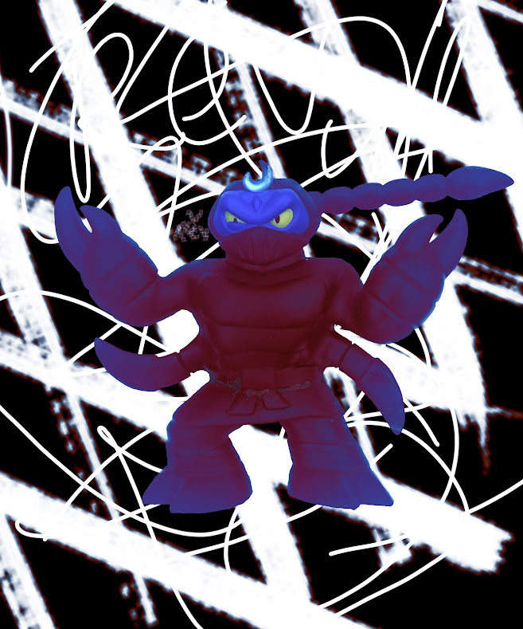
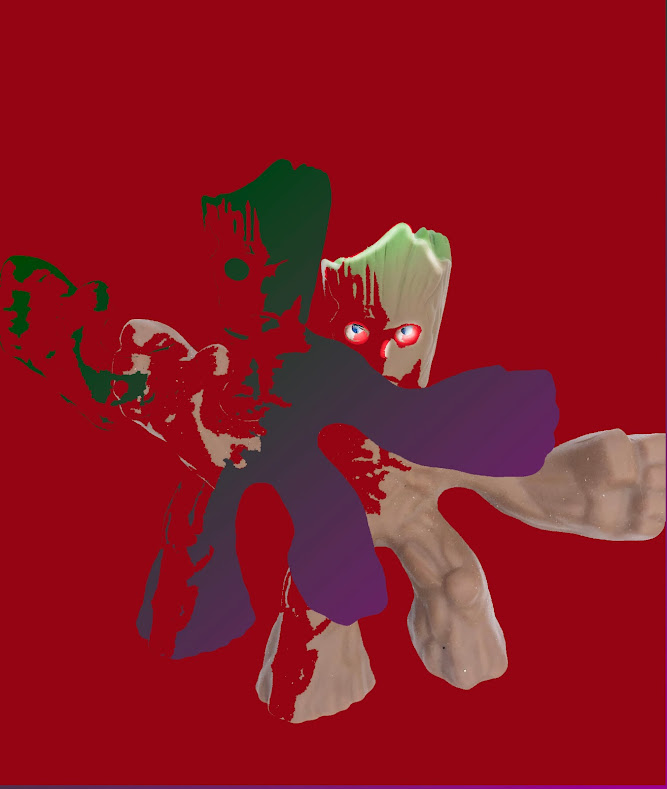

Fΐssΐ๏Ň
%̷̢̧̛͉͕̲̠̥̥͖̝̭̳̳̝̮̭͚̳̻͉̯̘̟̻̹̺͓͇̎͆̔͗́͜͝ͅͅ_̵̨̖̫̼̳̳͇͙̓͗̋͆̍͆͒̀̒̔͘̕͝%̶̧̛̱͍̩̫̞̳͙͙̿̂̅̃̓̏̉̇̾̅͊́̆̀̈́̐́͂̉̐̊͒̾̎̇̃̾͛̽̈́̇̉̔͗̎́͌͘̚͠͝%̵͈̯̜͚͙̤̹̋̉̇̐͆̊́͋͆̒̌͒͒̎̍̽̅͐͘̚͝_̷̧̨̢̢̧̨̨̡̝͇͚̠̭̗̞̲͕̻̲̺̲͇̙̗̲̙̪̥̬̰̪̼͕̦͔̱͔͎͕̙͕͉̬̘̳̣͉̯̲̱̒̌͆͋͂̒̉̆̒̀̓͐̑̓͑̿̅̾̓̍̉̀́̇̓̈̈́̊́̃̐̈́̋̃̒̏̅̀͋͐̈́͘͘̕̚͘͠^̸̧̧̨̡̻̤͈̱̝̭̪͈͚̲͓̞̣̤̦̹͙̩̖̗̖̯̫͇̲̙̜̹͔͎̙̞̤͐̂͆͂̀͐͌̂̔̍̒̀́̈͜͝͝%̵̝̺͖̜̘̹̬͇͓̣̠̙͗͊͂͌̋͆̍̊̓̃̀̅́̕͝ͅͅ_̷̧̢̛͕͉̗̭̝̝̯̼͚̽̒̍̀͊̔͛͌͗̆͆̇̓͌̒̃͗̔̏͛͒̋̀̀̈́̋̀͠͝͝ͅͅ€̷̡͕̙̥͖̜̺̗͙̰̗͍͈̲͙̱̻͉͈̠̙͚̉̇̆̐̒͆̀͐̓͐̂́̊͗͌̅͒͌͋̉̑̑̽́̏̚͜͜͝ͅ%̵̧̨̢̡̠̭̩̗͔͇͕͙̥̼͕̭̲̙͓̹̳̠̪̹̞̱͔̳̑̅̿͛͒͜͜_̷̡̢̛͙͓̖̺͍̲̻̟̙̻͈̯̜̫̪͈͔͇͙̝̲͚͉̘̩̩̼̬͕̜̝̮̺̖͓͍͌̓̽͐̒͛͌́̈̍̔̊̽̓̑͆͗̓̾͐̈͊͆͗̈́̇͐̇͛͂͂̎̃̚̕̕͜͝͝͝_̶͇̯̤͎̬̫̜͔̳̤̀͒̉̀̃̓̔̀̈́̿̈́̓̋͌̽̆̎͑̃̅̓̌̄̃͌͐̊̓̇̄̅̄̈́̈́͒̄̀͗͐͛̔̈́͌͑͘͜͝͝ͅ%̸̧͇̰̺̖̗͍͉̺̺̦̠̯̦̦͖͎̻̟̫͖͚̭̝̭̟̾̀̈̽̐͆́̽͋̇͛̍͒̃̓̈̂͌̋͋̑̎̌̽̀͗̃̎̅̌̎̐̽̚͜͜͝͝ͅ/̷̧̡̨̨̛̛̣͔̺̟͖͖̗̟̗̞̦͍̞͇̘̺̗͚͔̯͇̟̖̬̮̗͙͚͉̖̩͆͌̉̑̀̄̂̿̀̈́̎̓͛͋̊̾͋̒̈̓͒͗́̏͋͌̽͛̅̔̀͜͝͝/̴̢̡̢̛̠̟̖̰͈̣͙̹̫̥̰̭̠̥͚̰̻͍͍̞̣̥̬̲̫̳͎̰͍̺̼̫̘͖̣̜̖̻̦͒͛̄͂͂̀̑̅̾̒̌̿͑͆̍̃̈́̈́͌̅̊̆̈́͒̾͆͘̚͜͠%̴̧̢̡̢̢̹̫̝͔͙̬̖͍̩͚̗̦̲̮̙͈̤͇̞͚̺̖̰̜̘͓͇̦̯̭̙̋̀̌̂̊͜͝͝ͅ/̴̧̢̢̧̧̢̧̡̤̮̤͉̝̝͕̻̫̬̩̰̪̺͓̤͕̘̠̠͈̣͙͖̝̬͎̪̤̭͇̹̙͋͑̆̑̃͊̃̑̍́̊̽͂̍͂̾̀͘͜͝ͅ/̸̛̛͇̺̱̻̟̹̰̻͉̞̝̘͙̯̦̤͈̯̋̈́̈́̽͌̍͐̉̂̐̈́̓̀̓̿̽̀̿͆̃͛͆̀̑̈͐̈́̿́̑̌̍̌̍̋̋͂͘͜͜͝͝€̸̢̡̧̨̛̭̣̦̳̜̥̼̠̣͓͚̺̙͚̦̯͖̘͔̱͖̱̥̩̼̘̺̻̼̻̳̜̳̘̣͖͓͕̥̱̖̎͆̚͜͝$̸̨̨̡̡̛̛̗͈̫̻͓͙̲̦̱͚̝̘̩͕̞̫͎̮̯̗̞͇͍̺͉̪̗͙͈̫̰̰̣͇̟͚̖͇͓͈͖̠̝͌̊̆͊̒̿̀̅͒̍͆̓́̃̉̒̑͑̑͌̅̀͛̋̏͊̋͑̑͘͘͝͝͠ͅͅ_̶̨̨̘̠̬̺̦̮͕̘̱̼͖͈͙̣̦͔̝̜̰̗̣̹̖̦̽͆̉́̀̈̀̈͆́́͛̈͘͜͝%̴̡̧̡̡̱̪̟͔̣̘̺̣̥͕̦͚̖̭͎̰̩̱̪͎͙͔̘̳̊̉͆̉̎̎̉̐́͑͗̀̽̍̄̉̍̚̚_̴̢̧̡̡̧̧̧̢̩͎͍̯͇͕͕̮͈̲̝̼͓͇̺̭̮̺͔͉̫̣̰͚̩͇̙̮̻̞̝̰̞̙͎͇͍̼̒̇̔̌̍̋̏͝͝ͅͅ$̴̢̨̢̣͓̖͈̞͓͓̮̱̝̹̰͎̣̺̬̫͕̺̲̣̞̭̻̜̲̬̠̬̗͔̻̗̬̘̲͓̿̊̎̑̔̀͆̏͊͑̑́̒̌̑̓̀̏͂̒̒̚̚͝͠%̵̨̩̺̗́̒̊̈́̋̊̄̄̈̓̇̊̉̐̂̚͘̕͝͝͠_̷̨̞͔̜̜̹̹̻̝͉͍͍͇̝͈̤̱̹̩̰͂̅̌̂̀͑̈́̽̎͊̿̔͐́͑̿̈̑̃̉̀̓̄̎̑̎̆́̓͘͘͝ͅͅͅ%̴̡̦̯̲̰̘̯͈̠̯̦͎̟̳͇͕̖̪͕̩̖̻̳̞̬͈̠̜͕͖̼͖̞̝̯̯̪̳͎͔͇͇͖̌̿͗̊͆̀̽̉́̚͜͜͜͝͝͝%̶̧̧̭̘͉͓̪͈̻͈̗̱̘̰̲̟̰̊͛̑̾̈́̈́̇̓̑̽͋̓̽̂̏̈̃̇̈́̈́̂̋̃͆̌̋̿̿̈̓̈̿͘̚͝ͅ%̵̧̧̡̨̗̳̗̝͉̩̻͉̖̲̬̬̦͔̬̩̪͈̹̹͕̬̤̬̏͊͒̈́̍̉͐͊͗̀̈́̈́͛̾͐̈̉̏̅̎̕̚͜͝͠͝_̷̢̧̧̼̟͖̻̳͖̬͎̩̩̳̬̣͈̥͇̞̲̻̜͙̘̗͙̝̰̱͚̰̱̩̘̹̬̗͈̭̞̜̘̭̯͉̜̆̌̇̽̓̽̿̅͑̓̃̑́̒̄͛̈́͊̃́̌͗̂̕͠͝͝ͅ%̶̢̧̲̭͉̰̟͕̗̙̤̲̙͎̻͚̻̜̜͔̭̩̺͕͉̥̩̥̩̮̱̥̟̒͋̃̎̾͒̿͌́̅̎̾̆͑̿̂͘̚̚͜͜ͅͅͅͅͅ%̷̨̧̢̛̩̼̲̳̥̑̆͋͂͆̇͗̐́͒̇̌̓͆͂̐͑͠_̵̨̡̨̨͕̖͙̟͎̯̬̪͈̭̳͔̮̘̫͖̖̹̺͉̮͎͙͇̩̫̯̠̩̹͉͓̙̼̰̲̯̰̱͉̜̬͓͌̄̋̌͒̽͛͑̍̏͐͘̚͜͝ͅ%̷̛̜̱̰̪̥̱̤͍̌̾́̾͊̂̑͗̇̂̒̆͂͊̌̏̋͆̃̇̾̑͒͆̈́́̑̒̊̔̾͘̕̚_̶̢̛̛͇̺̖͙̙̯̟̫̫͓͕͎͖͔̤̦̰͇͛̏͗̇̊̈́́̂̋͛͂͐̅̀̈́͌̓̏͛̀̓̂̓̚͘̕͜͝͝ͅͅ%̸̧̢̧̧̡̠̟͙̺͔̝̣̥͇̲̹̙̝̜̯͎͖̰̘̩͎̝̞̮̬͔̗̭̝͙̫̤̩̙̼̣̼̭̥̓̍͜/̵̢̡̛͓̖̞̘̮̹͓̲̻̲̭̹͋̂̎͌́͗̓̈̋̓̀̉̋̏̎̅̋̉͊͊̾͗͂͆̋̌͌̒̿̌̑̈́̑͋̀̉̿͘̚̕͝_̷̨͖̫͙̜̺̠̺̝̘̻̪̰̲̜̼̰́̀̇̉͒̓̈̅̌͊̇̄̃͐̔̀͒̓̾̽̀͑̋͑̂̕̚̕͜%̴̨̧̢̣̞̺͖͕͍͖̘̼̘͎̼͉̹̠̦̠͈̬̼̟͕͈̻̙̬͒̌́̂͊̉̌̎͐̇̃̿͐̄̉͑̐̈̐́̊͋̒͊̓̋̂̒̃̋̆̚̕͜͜͝͝ͅ/̵̨̛̛̪̞͙͇͓̤̰͉̝͇̫͙̥̻͑̀͒͑̂̊͑͗̄̽̑̒̄͒̆́̓́̉̎̀͌͐̽̆̈́̊̀̋̔̓̿̎̅̂̾̐̎̃͘̚̚̕̚%̵̡̛̛̛͚͖̫̣̪̀̐̔̈̅̍͌̉̂͂͑́̀͛͗̉͂̑̅̃͆͑̂̈́͜͝͠ͅͅ%̵̨̢̧̛̛̣̙͖͚͚̜̯̟̙̙̗̗̞̞̘͕̱̦͖̟͇̜͇̠̬̪͉̤̙̳̼͍̣̱̭̭̬͓̂̋̌̆̊͐͐̈́̍̇̍̃̓͐̍͑̒͘͝͝͝_̷̢̡̨̡̨͈͔̯̲͈̤̬͍̩͈͕̯̘̗̬͖͉̫̣͕̖̹̺̭͉̲̯̣͖̩̮̖̤͉͍̜͚͊̽̔͛̐́͗̓̓̐͒̐͌͌͆̏̓̓̍̉́̽̓̏͗͂̾̈́́̄͊͐̂̒̓̌́̂͋̚̕̕̕͘͘̚͜͜ͅ%̷̨̤͔̣̮͚̻̝͎̪͍̜̱͓̞̻͉͕͕͉̬̹͍̗̦̻̲̥͖̮͓̲̳͗̊̑̑̈́͌̾͗̿̈̏̊̑͑̔́̎͑͌̀̾̏̑̉̐̊̓͛̓̐̈́͋̊͋͘̕͝͠͝͝/̵̢̨̧̧̢̧̧̛̲̲̪͈͓̭͎̰̱̥͔͈̩͖̜̼͇̤̭͍̥̻͈͇͕̮̦̫̼̀̄̓̓̍̋̋̓̍̌̉̿̉̎̐͗̌̋̆̅̂̈́̿͌̌̈̿͆͂̎͌̾̀̅̈̂̈́̄̕͝͠͝ͅͅ€̷̡̛̛̬͍̞̠͈̝̲̭̠͉̙̙̤̘̩̭̙̯̒̈́͐̉̈́̏͌́͗̈́̾͐͋͊̿͋͐͌̅̐̈̈́̏͆̈͋͛͋́͐͐̅͆̊͌̍͛͒̉́̈́̓̿͘͠͝€̸̼̻͙̒%̵̨̨̟̠̖̼͙͍͖̗͇̩̗͕͕̭͋̂̀͒̏͊̈́̂̋̌̋͒̊͊̒͐̾̒̃̑̿̈̎͗̈̊̈́̀̎͑̚̚͝͝͝ͅ^̵̨̨̩̠̭͕͓̬͔̦͎͔̼̳̳͖͚̥͎̣̺̟̙̯̪͈̦̠̤͎͓̠̲̮͕̼͎́̓͌̍̓́́̏̾̊̒͋̎̍͑̿̔̈̑̚̕̕͘͝͝͠_̷̨̢̤̱̼͔͍͈͈̝̖̻͓͎͉̫̖͚̼̦̭̜̱̖̝̙̼̺̠̙͔͈̩̜̦͚̦̻̬͓̥̮̙̙͈̙̪̘͙̏̑̐̈̿͒̈́̀̂̊̈́̀̐̏́́͗̆̀̂͋̽̈̄͛̉́͗̊̓̀͘̕̕͝ͅ%̶̧̨̛̛̛͎͓͚͇͙̦̟̩͓̭̦͔̦͍̜̼̪̤̲̺̮̜̜̝͎̞͈͕͔̪̙̩̪̻̰̹̠͙͓͇̰̤̒́͗͌̈́̂̑͐̏͗̋̈̀̉͌̾̈́̓̄̃́̍̏̆͊̂̇̔̐͂̀̌͆̀̄̑̚͝͝͝͝͝ͅ^̶̢̨̰̲͎̳̠͍̪̼̳̼̘̝̲̫̞̖̝̩͔͎͇̮̜̠͔̤̗̀̏͗̕͠ͅͅ_̸̡̹̳̹͓͈͔̑͌̉͋̃̈́͗̓̈́̓͑̈́̈̽̂́͒̊̓̅̀͋́̍̎̐̾͋̄͋̌̾͆̍͆̀̕͠͝͝%̷̛̞̳̺̪̯͍̳́̀̾͊͊̈̿̎̌̐̈́̈́́̓́̂̽̈́́͌̀̐̓̎͘̕͝͝͠^̶͇̄͑̽̐̿̄̊̐̾̂̓̉̉̎͐̿̃́͋̇̀̿̑̐̂̈̏̾̐̿̑͆̓͊͋͗̀̕͘͘͝_̵̢̡̟̮̬̞͕̼̭̭̫͔̬͚̩̳͂ͅ^̵̡̨̡̘̤͓̖̣͙̮͍̫͓̩̺̟̤̥͓͖͇̫̖̻̪͙̙̫̟̥͚͖̘̩̮͖̹̰̣̤͔̭̣̼͚͍̱̝̊̍͂̾̀̉͋̔̃̏̔̔̔͌̉̎̋̑̽͛͌̆̔͆̒̏̾̍̀͑͒̊̓͘͘̚͜͝^̶̼̣̣̬͖̖̗̼̖̰̙̰̅̌͑͌͛̎̀͐͆̾͂̍̐̇͒̈́̽̓͛̓̆̾͒͛̈́͌̈́̕͜_̷̡̧̨̢͔̳͍̫̱͇̺̼̳̻̻̘̻̙͕̘̖̙̼̠̳̺̯̟̝̲̼͗̀̂̌͜ͅ"̷̢̧̨̨̧̡̛̬̝̪̙͇͈͚̹̹͓̻͔̜̮̖͎̦̓̀̀̂̀̿̍̋̍̀̒͒͗̂͗̀̔̓̓̀̀̇͗͂́̒̃̑̄́̈́͂͌͊͂̏̾̊̄̉̔͛̆̕̕͝͠͝ͅ_̵̢̧̨̧̢̛͎̯̜̹͇̥̠͓͕͍̬̺̲̠̰͍̬̙̗̳̱͖̤̘̣̞̘͚͍̺̗̮̹͖͚͚̲̖̭͙̿̔͂̎̀̂́̅̆̓̋̂͌̓̔̑͌̏͑̅̾̊̒͊̎͊͠%̶̬̪̙̹̫̠͔̻̦̭͓̣͊̈́͋̆̂͝͝:̷̡̨̝̙͖̞̻͈̹̟̺͚̣̩̙̙̩̦̟̺͉͔̞̳̫͕̥̘̬̙̭̬̠̈́͂̃̒̃̑͆͋̔̽̓́͂̊̈́͐͒͛̃̂͊̊̀̐́͑̄̒̋̍̈̊̿̽̇̕͘̕̚̕͜ͅ^̷̨̧̛̛͓͚̹̼͍̰͓͓͇̝͍͍͖͇̳̺̺̥̫̗͕̹͈͛̑͒̓͒̃͗̂͆̿̇͑̀̆̈́̇̀̈́̌̐̒͑̿͋͘͘͘͝͠:̸̡̢̗̻̭̲̖͈̹̐̀͌̂̅̈́͂͊͆̒̎̆͐̐̓̈́̒̒͑̓́́̑̇̽̈̀̈͛͑̅̓́̍̅̉͒̋͌͆͛͘͘̕͘͝͝͠_̸̢̢̛̝͉͈̙̣̣̣̖͚̞̞͙͈̘͓̲̹̟̀̅̔̓̃͠:̴̧̧̧͇̠͔̠̹̱̞̙͖͓̯̮̺̳̞͙͙̲̘̣̫̗̖͙̹̫͖͒̒͗͜ͅ:̸̡̧̨̧̛̳̗̼̺̪̻̝̱̘̱͙̰̜̘̝͈̣̖̭̟͎͋̅́̄̒̔̋̓̂͊̈́̀̇̀́̑̅̀̆͐̒͐͗̅͗̽͐̋̏̅̃̔͊̏̓͆̋̇̚̚͘̕̕̚̚̕͜͜͜͠͝_̵̛͈̺̖̜̯͍̮̹̪͙̦̠͈̮̪̟̠͔̞̮͉̬͖͛̇̉̌͋̂̍̇͂̈́̈́́̄̓̾̍͌͛̒̏͋̕̚͝%̴̛̛͙͉̬͔̲̝̞̖̱͊̏̾̀̇̈́̀͋͒̏̒͐͗̈́͆̊̂̏̀͗͒̈̒̄̽͛͋̎̓̏͝͝€̵̨̨̡̻̜̰̖̞͎̞̲̪̱̝̼̮̫̫̳͍̩̙̬͈̣̥͌͜͜ͅ_̸̢͔̲̦̘̥͔̤̩͎͕͈͕̥̮͖̠̭͇͍̞͓̬͎̝̥̺̺̣̲̫͓̈̐͂̓̈́̑͛̎̏͒̏̒̀̐́͋͋̓̈́̒̈̏̈́̆̽͆̕͜͜͜͠€̶̞̝͐̀͋̋̐͆͆̈̈́͐̃̐̄̈́͑̂͂́̋͑͊̽̏̏̄̕̚̕͘͘̚͠͝͝%̸̧̢͚̹̤̪̖̜̼͓̼͖̹̞̹̟̠̠͔̝͈̥͈̇͐̎̌̓́̓̈́̿̋̔̔̑͆̏̇̏͑̈́̓̐͒̑͠͝_̷̘͇͙̹͔̤̤͎̮̦̺̝̘͓͈̦̣̖͙̞̫̐͑̐̀̆͐̒͑̆͜͝€̸̧̡̢̛̛͙̫̤̞͉̳̙͔̩͍̭͉̫̖̮̤̯͎̦̣̜̗̞̩̻̙̬̹͓͓̑͊́͑̈́̓͆͑̓͆̽͋͆̏͂͌̀̐̒̈͜͝͝͝ͅͅ%̴̖̘̳͖̭͙̯̀̓̊̃͗͋͂̅ͅ^̴̢̛̛͉͓͈͓͉͓̘̻̮̬̭͈͔͕̹̫̱͓̀̽͌͒̈́̄͑̂́͆͋̑͐̀̐̽̐̋̽͌͛̇̇̏̇̓̅̓̓̾̋̑̓̓̐̃̈́̈́͋͘͘͠͝͝€̶͓̝̟͓͊̍̈́̎̏́̌̐̒̀̈̓̎͛͋̄̔͂͗͆̀͊̾̍̍̽̅̂̿̂̏͂̃̓͛͂̚̕̕͝%̵̦͋̓͋̆͑́̈̐̏͑͌͛̍͑̌̉̔̆́̎̎̐̀͊̕͝͠^̵̡̧̧̧̡̨̛̭̺̬̻͚̘̰̦̰̦͚̪̳͕̜͍̯̘̫̣̦͍͚̳̳̼̩͓͎͎̹͙͚̻̹͔̗̲̭͋̐̆̑͊͜͜͜ͅͅ€̷̧͈̺̱͈̖̳̦̬̈̐̇̌̓͘͝%̶̟̰̺̯͍̤̩͙͚͌͂̃͂̓̂̎͂͌̔̌̈́͐̀̆̆̈́̽͂̕̕̕͜͝͝^̶͈̭̖͎͎̩̠͖͕̦̩͍͎͇͚̟̟̈́͛̓̃̌̎̒͆̎̍͋̃̽̀̃͑̎́͒́̋̕͘€̷̧̢͓͍͎͉̱̱̙͙̤͇̖̤̻̰͇̦̫̣͎̲̙̘̤̼͔̟͔͍̮̠̙͖͖̫̩̖̼̯͍͈̝̫̳̬͎͈̏́̈́̒́͐̈̏̄̐͋̀̀̓̐̕̕͠͝^̷̨͇͓̖̙̻̠̥͉̥̠̠̭̮̭͚͙̮̟͍̋̓͂͒̓̍͑̌̎͑̇͑̅͛̕͘%̶̨̢̡̧̼͈͓̜͖̭̰͉͉͙̠͉̩̝͎̹̦̲͖̳͇̲̟̦̳͋̃̾̀͐̆͆͊͒͐̓̄̓́͗̈́͐̌̆̀̅̈͋̔͌͋̂̍͋̀͗̔̀̓̌̆̈́̒̆̆͂̏̓̕̚͘͘͝͝^̵̡̳͔̙̠̫̜͖͖̬͓̠̘̣̦͈̼̩̰̟̜̝̯̞̖̰̄̉̑̾͋̔͋̃̎͋̚͝͠€̷̠̖̺̪̺̪̦̂̐̅̊͊%̴̧̡̪͕̤̪̦̗͕̗̬͓̜̣̞͙̯͕̥͕̻̦̖̹̦̹̫̦̆̅͊̓̽̆̈̀̋̎̓̐̉́̾̍̌͆̿̎̐͆̕̚͝ͅ^̵̨̻͕̯̞͈̞̟̜̭̞͓̥̝̤̞̯̆̓̾̈̈́̓͋̌̔͐̆̓̀̅͘€̸̨̛͓̮͖̳̠̗͉̗̃̅̆͑̆͂́̃̃̍̉̎̃̀̊͐̏̔̀̓̆̐̀̈̂̑̀̽̈́̔̽̓͆̒̽̀̃̽͋̋͝͠ͅ^̸̧̧̹̣̟̹͔̻̬̤̞͙͎͙͍̠̫̥̟̝͎͓̬̜̰̼̗̺͉̐͌̏͂̋̒́̅̓̀͛̓̐͒̉̀̏͊͜͜͜͠ͅ%̸̡̡͖̻͕̰̪̝̟͎͕̜̟̜͔̼̜̪̩̺͖͖̣͙͍͚̘̳̬̱͇͓̥̖͓̭̦̬͓̳̓̅͆͂̈̊͂̔̄̐̓̊̍̀̿̀̾̈́̊̌̀̈́́͘̚͜͠ͅ^̵̢̯̺͇͇̳̙̟̟̰͉̳͖͋̓̿̆̈́̉̒̔͒̓̍̏̋͑̒̐̽̓͝͝͠€̶̡̡̨̢̛̘̞̥͕̥̱͚͖̻͍͚̫̩̳͚̪̙̦̩̘̩̪̽̓͐͐͐͊̏̃̆̌̽̿̌̋̿̉̾͐̽͐́̈̍͂̈́̓̏̎͛̚͠͝ͅ%̷̢͔̰̣̉̒̒̓̔̇̈́̇̒̈́͒͗̈́͑̚̕͜͝^̸̛̬̣̯̘͈̑̅̐̿̀͌̈̆͗́̇́̑̎̈́̉̐̅̌̾̈́̀̓͌̓͐̓͐͗̓̐̈͒̋̄͊̈́̿̿͆̈̄̉͂͘͝͝͠&̸̨̨̡̛̛̬͉̜͕̺͇̘͖̜̞̼̫͉̝̲̱͍͔̥̱͉̠̖̝͎͌̑̑̏̌̿͗̊͂̈̈̈́͐͊̃͊́̏͐͛̈́́͐̓̆͛̄̑̂̀̈́͒̀̆͌̍̇͌͘͜͠͝͝͝ͅ:̶̢̡̢̢̡̛̣͓̻̗̼͚̮̥̜͎͔̥̟̜̤̻̬͓͓͈̥͈̥͊͆̑́̐̅̋̂̉̃́̿̄̀̑͊̎͑̊̾̐̉̂̔̄̔̓̎͑̾́̒̀͊̽̓̓͂̀̀̏͆͛͘͘͘͘€̵̡̛̟̬͕͓̬̮̼̻̣̖̳͉̉̊͒̽͌͂̊̈́͛͗̄͠^̸̨̛̛͍̞̬̺̙̹͂͂̿͆͋̒̎͌̅̽̂̀͐̃̄̚͜͝:̵̧̢̨̧̛̛̻̱͖͇̮̖̭͖̠̗̬̝̭̱̭̦̪̼̬̦̤̜̘̜̟̦̘͓̝̣̱͓̝̫͇̟̲̳̼͈͒̎͑̂́̈́̓́̑̇̃͗̈́́̍̅̔̑͊́́̐̀̔͑̒͊̊̈͐̀͂̄̔͌͊̌̎̆̚͜͜͝͠ͅ^̴̧̨̧͓̱̤̻̦̣̫̱̮̺̤̙̖̤͚̳̥̰͙̟͓̟͈͙̯̝͔̠̘̲͙̰̥͇͍͍̤̅͊̽̔͋̂̌͊͑́͂͊̈́̒̇̈́̐̆̔̓̈́͗̒̓͌̕̚̕̚͠€̵̨̨̡̧̢̡̢̛̛̮̤͉̙̼̼̰̹̪̠̦̤̖̩̗͓̬͔̰̺͉̟̮͚͈̞̬̦͔̩̬̎̏̉̊͊̌̽̇̏̈̆̏̍͑́͛͜͜͜͠:̸̧͖͚̠͈̹̳̖͕̙̳̖͕̐̔͋̃̉͘ͅ^̵̧̡̢̢̛̦͚̲̹̫̠̤̫̹̻̭̮̠̳͕͍͔̝̣̞̜̲̦̮̠̙̮̮͙̭͎̳̜̺̳̩̃̌͑̎̂̉̾̈́̿͌͂̌̿́̾̔̓̅̂̍̉̔̃̋̃͒̅̂͐̎̇̐́́̏̽̆̉̂̒̈́͘̕͜͜͝͝͠͝͠͝ͅ:̴̧̟͖̯̥͇̰͖̲̺̞̫͕̺̺̱̲͎͙̘̣̜̘̟̜͉̳̘̬̒̌͑̽͐͗̈́̉͘͝͝€̴̡̧̧̲͈̻̮̬͇͚̬͚͖͕͓͉̻̻̰̞͇̜͈̝̞̥̥̹͖̹̝́̇:̷̡̮͔͕̹͍̞͙̟̰̻̗͍͖̦̮̲͎̟̙̦̪͍͈̼͎̤̼̖͖̠̯͚͇̦̯̰̼̦̳̺͉̅̃̅̎̔́̃̋̾̇̄̽͐̐̃̋̈̉͗͋́͊͗̇͆̄͒̋́̈͂̕̕͜͝͠ͅ^̶̧̛̩͖̺̤̻̯͍̳̠̟̗̯͍̳̱̭̰͚̲͛̋̃̑͋͒̋̍̏̒́͐̊͜͝€̷̛͎̮̙̪͇̮͕́̒̏̒̔̓͆̊͒̑͌̒̐̓͊̇̀̓͗̒̔̔̕̚͜͝͝^̶̧̢̢̳̹̝̻̬͚̦̱̬͉̹̤̰͙̰̭̦͍̭̘̩̖̖̬̗͖̣̥̦̗͖̲̟̻̔͗͂̈́̽̑̇̓̈́̇%̶̧̨̧̢̢̛̤͎̳̖̝͕̦͓̘̝͈̝͔̯̘̹̭̘̪̗̬̼̥̎̓̃͗̏͂͛̄̈́̓̈́̈̓̾̐̃̋̉͋̍͑̈́̒̿́̀́̕͘̚͝€̶͓̩̭̖̪̫̰̺̙͉͆͆̿̃̈͛̏̆̓̑̆͑̿̄̔̒̍͐̓̑͛̂͊͋͋̎̆̔̚^̷̧̨̛͔͇͓̲̪̭͖̲̖̗̦̼̙̘̦̩̣̱͕̭̉̎͊̍̔̈́̿̈̈́̍̌̂̋̀̏͘͘͠ͅ%̸̡̧̛̮͉̭͚̲̺̝̜̪̹͎̗̫̩͈̞̬̖̬͔̻͙̘̰̐̐̿̀͆̓̄͊̃̅̉̄̈́̒̀̿̍̉̎̆̐̔͐͌̀̉̾͛͐́̃̉̎̐̕͘̕̚͝͝͠͝͠͝ͅ^̴̪̭̭̝̞̪̱͂̃̀͐͆̈͂̄̀̎͂͋̍̈́̃͐̎͛̀͒͠&̷̢̹̟͙̻̯̦̖͍̘̤̮͈̜̯͓̙͙͉̻̟̹̬̹̱̝̭̤̫̭͙͗̈́̂́̾͛̔̅̉͋͂̈́̀͒͛͒̇̿̏̒͊̄̍̕͘͜͝͝͝:̵̧̧̬͇̟̥̥̣̞͇̼̟͈̩̩͎̗̹͎̪̫̼͔͓̤̻̣͎͔͕̜́́̓̓̄͋́͋̕̚͜͝ͅ^̷̨̧̧̛̛̛̛͔͖̻̱̲̳͍͍̜̮̳͉̻̣̗̖̜̞͖̤̮̩̗͍̜̲͎̩̩̩̈́̆̎͆̎̌͋̈́̇̓͂̊̎͑̈̉̀̀̒̎̅̕͜͝͝ͅ€̵̢̨̡̢͓͎̮̟͖̺̯̭̥̬͈̬̥̜̬͚̠͖̲̯̩̩͔̤͓̑̆̈́͂̅̐͛̃͛́̉̊̈́̿̐̾̈́̓̅͒̒͆́̊͐́̅̈̔̕͘̚͠:̵̹̑̐͛̈́^̸̡̡̨̛̤͙͖̣̥͈̟̤̞̱̼̤̱̫̦͚̼̙̞͖̞͕͎̓͌͛͐͜ͅ€̵̢̢̢̡̡̨̨͖̠̹̗͓͖̣͚̣̺̺̮̟͔͍̲̦͓̪̩̻͇̗̭͇̻̯̣̬̹̥̩̭͈̱̊̐́͌̊̆̀̈̈́̆̉̃͌̎̎̓͐̈́̌̂̋̚͝͝ͅ%̴̢̨̤̟̟͔̩̟͉̞̺̲͛́̍͛̈̍͋̑̂̔̒̏̂͑̀̀̈͋̂͂̌͑̇͛͆̌͒̿́̽̔̿̈́̎́̏͋̓̕͜͝͝͝^̴̛̛̛̮̦̹̥̞͓̙͕͎̣̠͍̖̼̞̰̝̫̼̪̝͈̱͉͍̭͛̆̅̄̾̌̂̈́͂́̆̏̊̀͋̓͛́̆͊̽̉̓̇̄̏̍͆̏̇͋́̈́̌̈́̄̔͋̕͘̕͠€̷̛͖̈̓̍̇͒̈́̀͊͐̉̌̔͋͌̀̅̒̇̄͋́̔̇̈͋̊̈́͌͊͘͠%̸̛̛̛͉͑͐̓́̿̀̐̄̄͋̍̀̏̋̍̈́̈́̓̊̑̾͑̄̊̀̃͋̍͛̆͊͛̿̈́͌̀̐̐̈̀̕͘̚͠^̷̢̡̢̧̡̨̛͈̘̼̰̬̖̠͕̬̜͙̟̳̟̜̤̮̮̱͔̜̮̩̲̺̗͙̥̪͕͎̗̪̣̗͈͔͙͎̓̔̅̿͑̔̽̈́͒̈́̀̃̀͂̍́̋̉̿͐̓̿̒̒̓͆̏̌̐̊̆̊͒̏̕͘͜͜͝͠ͅ€̵̢̡̨̛̹̗̯̤̦̪̱͓͍͉̝̹̻̤̗̱̦͖͉̮̭̮̗̫̠͕͇̟̦͓̞̟̦͙̖͍̙͚̎̋̅͐̓͂̈̐̑͒͗͐͋̂͂̃̊̒̐̾̂͒͊͆͊͑̔͊͂̓̐͂̎̊̎͘͜͝ͅͅͅ%̶̛̙̎̀͋̀̂̓̈͗͐͑̈̌̄͋͋͋̈́̂̓̏̆̎͐̑̈̑̓̅̕͘͝€̵̢̢̨̧̧̛̹̣̜̟̖̦̞̪͓̣̬̩̝̯̪̰͙͔̞͍͙̘̙̜̘͚̻̟̬͂̃͊̅͆̀͒͋̒̓̋͂͂́̎̆̿̿̀̏̇̉͋̉̎͌̈́̆̅̉͗̾̐̔̆̈́̽̐̅̎̈́͌̏́̕̕̚̕͠ͅͅ^̸̡̨̛̜͓̩̳̟̖̳͛̑̆̀̔͂̇́͊̌͛͂̋̋̎͊̀͛́̀̈́̀̒̈̍͋̚͘͘͘͝͝͠͠͠%̵̢̳͍̮̝̭̮̼̣̭͉̣̬̖̳͒̂̅̿̽̋̈́̈͛́̀͂̀̒͒̃̓̒̌͋̆͒̔̊́̐͛̕̕͘̕̕̚͜͝͠͝%̶̖̮̥̳̭̘̰̭̥̬̘̮̣̳̬͉̗̩̻͈͉͚̥̰̗̥͔͓̥̰̗̰̺́̎̂͆̌͛͜͠ͅͅͅ^̵̧̡̧̨̡̛̛͙̜͍̯̙̫͙̺͙͙̩͔͇̝͈̙͔̯̜̯̤͖͔̫̻͔̠͔̜̗̪̘̞͉̜͚͚̦̘̳̣̂̐̅̃̃̈́̒̑̋̑̃͐̅̍̋͘͘͜͝ͅ€̸̧̨̛͓̬̘̻͍̱̻̭̻͎͓̰͉̱͈̦̘̈́̀̏̋̿̈̋͌̓̈͒͊̽̌̓̽̓̌͊̎̌͐́̕̚̕̚͠͠ͅͅ^̷̨̡̨̨̨̭̙̞͖̖͙̞̝̳̰͓͕͇͈͉̫͍̘̻̝̤͚̺̘̬̰͇̗͓̰̳͈̻̞̤̹̣̈̿̇͌͋̒̍̈́̔͆̓́̈́̈́̉͒̂̒͂͐̈́̕͘͘̕̚͜͠ͅͅ%̶̢̛̳̥̗̹̜̠̭̩̖̰̹̼̲͙̥̫͕̩̱͖̦̤͈͑̃͗͑̆̀̾̄͐̕͠ͅ€̷̨̛̰͔̺͍͍̣̈́̏̈́͛͛̈́̔̍̏̏́̔͆͝͝ͅ€̸̨̢̛̫͖̺̮̰̤̩͍͓̙̩̳̦͔̱̩̲͖͓̘̟̤͕̖̳̗̃̏͂̌́̐͆͛̎̈́͑̂̏́̽́̉̅͐͌̐̒̚͘͘͜͝͝ͅͅ^̵̯̬̬̭̠͓̼̤̩͍̹̟̭̦̄̽̈́̉̔̽̂͗͑̀̽͋̌̃̏̂̉̆̚̚͜͝͝ͅ%̸̡̡̢̡̧̼͎̼̹͎͍̳̭͇͚͕̮͔͖̬̠̘͔̟̘̰͙̣͖͍̫̻̠̮͔̤̙͚̯͎̼̳̭̱̤̉̄͆̏̍̔̐̾̈͋̓̋̏̓͑̚̚̕͜͠͠ͅͅͅͅ€̷̨̛̛̛̞͔͙̩̼̜̫̟̱̫̘̞̙̖̠̱͉͒̿̇͗̊͛̏͊͐̌̀̈́̋̄̃̿̋͐̀̽̌͂́̒̈̐̔̈́͗̄͗͘̕͘̚͝͝^̴̨̨̨̥̤͖̣͍̭͎̘̗͉̞͕̜̰͙̯̝͍̳͎̫̬̯̜̥̬͚͈̞̝̘̳̻̔̂͊̿̆̈̈́͊͐̊̐͒͒͒͑̏̽̂͐̑̍̈́̓̿̈́̐̒̉̊̐̊͛̏͊̉̆͐̆̓̕̚͘̚͝͠͠͠͝͝ͅ%̶̧̧̼̺͚̟͙͉̪̠͚̮̠͉̰͍̖̯̼͕̩̙̥̰̝̘̭̩̦̯̰̝͕̺͚̫̗̩͚̥̩̗̏̿͂̄̏͗̄̂̉͐͌̎̄̈́̈̍͒̍̉̊͊̿̽̀̔͗̈́͒͋̒̈́́̉͒̉̽̚͠͝ͅͅ€̴̧̧̛̣̩͓̩͇͙̙͇̦̦͓͒̏͊͋͐̌̉̌̂͆͂̿̽́̅̃̔̈́̊̚͝^̶̧̧̡̢̡̹̳̣̼̻̘̳̹͇͍̦̫̗̻̞̗̹̜̮̜̥͇̗͎̪̗͙̘̳̺͇̫̻̟͓̪̤̱̱͈͇̗̒́́́̒͋̉̅̃̔̂̑̀̈́͊̉̆̍̈̊̏̏̈́̉̓͆̄̾͗̒̀̊̈́̏͛̇̾̇̕̚̚͘͜͜͜͝͝͝͠͠͠%̶̢̰͎̳̝͈̗̼͇͓̮͇͓̯̫͑͊̌͘ͅ€̶̨̛̬̩̖̹͇̯̼̹̪̮̘͔̫̼͍͙̗̝̭̓̆̌̄̐̒̾̓̏̇͒̾̍̎̽̈́̃͂̈̕̚͝͝ͅ^̶̡̛̛̮͖̤̤͓̼̊̾̽̄͗͑́̈́̔̌̀̽̂̓̓͗̽́̑͛͑͗̈́͘͘͘͝͝͝͝ͅ%̵̧̢̢̛̯̞͉̼͍̗̻̻͎̙͍̥̝͎̻̞̗̮͍͎͓͔̙̮̗̞̺̫̟̯̫̺̮̰̄̓̏̅̍̓̀͂̉̊̃͑̔̄̾͗͑̈́̋̂̍̈͊͗̈̋͆͆̉͐̅̔̐͒̾̈́̕̚̚͜͜͜͝͠ͅ^̵̰̣̫̞̗͍͓͓̯̬̬̺͖̜̄̉̓͂͛͑̓́̄͋̿̔̽̇̂̈́̏̀͊̀%̸̨̧̛̰̱͎̠̺̗̺̱̼̹̻̙̰̖̗̯̘̬̬̘̲̼̪͙͓̻̝͍͈͔̼̩͕̭̩̝̘̩̠͕̖̟̅͋̓̎̈͒̔́̎̋̐͋̀̍͆̎̿̆̄̓̀̆̈̀̔͛̇̈̍̊̋̅͆̒̋̅̎̕͜͝͝͝ͅ€̶͓̝̞̭̘̪̮̣̙̤͚̥͊̊̋̑͋͒̈́̀̃͑̀͐̑̽͐̑̓͋͠_̵͓̞̻̬̿̐_̷͎͇͍͖̆́̍̈͊̈́̑͐͑͛͊͗̅̈́̀̎̈͗̑̿͌̎͒͂̒͒̌͂͐̓̇̈̐̎̂̕̕͝͠€̷̧̧̡̛̛̥̗͍̹͚̦̮̝̰͕̺̠̞̯̗̳͖̦͍̼͚͚͕͎̪̘́͗̔̿͛̂́̋̌̋̔̓̊̒̋̄́̒̅͑̉̓͑̇͐̓̿̂̓͊͋̈́̕̕͠͝͝͠%̵̛̙͈̼̹͔͙̜̈́̽́̐͒̌̾̃̀́̀͊̆̉͊̈́̉̈́͗̇̈́̈́͋̍͑̓̈̎̐́̽̆͘̕͘͜͠͝_̵̘̼̙̰̣̪̩̲̪̱̣̤̥̟̲͓̪̉͗̽̈́͊͆́̕͠ͅ€̷̛͍̰͖̤̔͊̎́̀̋͊̑̾͑͐̆̽͒́̎̿̃̎̽͌̿̀̒̄̃̽͆̀̔̄͗̓̈́̃͗̄̎́̏̆̃̚̕͠͝%̴̨̛̤̤̣̰̳͈̤̩̗̙̰̯̦̬̘̭͔͚͚̖̤̬̭͇̖̲͔͖͈͖͍̺͉͇͖͍̺̀̑́͗̒̈̅̅̂̑̊̓͆̒_̷̢̢̰͚̪̤̲͍͖̼̣̪̩̣̲̪̫̭͙̙̯̘͚̻̦̫̺̪͖̱̼̟̱͚̼̞͓̥͇̮̯͉̓̌́͂̆̔̒̓͗̅̇̌̑̃̋̓̽͊̓͋͑̓̂̌̃̉́͊̑̂̅̚͜͜ͅ%̶̛̛̛͓̼͖̮̟̼̱̱̲̠̗̭̩̜̲͈͉̳̟̝͎̇̐̏̈̉̎͑̑̎̿́̏́̆̃̍̈́͛̿͒̓͑͒́̆́̈́͑̏̉̑̔̈͑͊̇̂͌̒͘̕͝͠%̵̢̨̢̧̨͖̪͙̘͈̘͔͓͎͍͙̫̤̬̰̰̞̞̝̰̫̱͇͔͔̠̖͛̓̂̏͘̚͜ͅ_̴̨̨̧͖̺͓͍̹̞͉͈͎͎̦͚̝̬̖̗̯̇͂̏͊̈́̏̍̽̇̐͂̏͗͊̀̿̔̉̂͆͜͜͜€̵̡̧̧̺̟̝͍̤͍̞͇̜͚̟͔̰͔̯͇̝͚̳̻͉̪̠̩̯̤̗͈́̂̔̓̃͌̐̽̏͛͊͋͑ͅͅͅ€̵̢̧̛̪̩͉̞̖̠͓̜̮̞̩͍̠̓̄͂̓͋̄͆͂̈̊̌͒̑͆̔̆̀͊̈̓́̈́͛̊%̷̧̨̧̯͇͔̠͙̯̰̞̠̰͍̫͔͎̫̝̭̞͎͚̥̀̃̀͐̈́̊̓̈͛̀͌̚̚ͅ_̶̰̳̜̣̩͖̙̻̜͈͈͙̩͖͙̈́̍̅̑̈̈̀̃͝͝%̸͔̜͓̳̣̘̬̻̰̬̞̣̖̲̘͉̱̞̱͍͕͇͔͖̳̘͕̪̗͍̞̭̞̈̈́̀̂̂͌̀̄̄͆̏́̌̎́̿̽̓̆̓̈́́̀̎̈́̚̕͜͜͠͝/̷̡̧̪͚͎͉̝͓̹͖̝͙̠̞͙̟̯̥̪̫̠̫̤̣̜̝̗͕͉̱̪͓̻̲̬̲̗͍̪̠̭̟̄̀͗̀̓͊̓́̄͒̄̓͗̓̔̊̏́̀̿̾̋̃̏͑̓̄̕̕͜͠͝͝ͅ€̴̧̢̛̫͇͎͎̼̼̻̠͖̟̝̗̪̀̒̈́̅̓̈́€̸̨̪̠̯̲͚̠͍͍̬̬̬̳̝̫̪͎̦̭͑̂̋̔͗̏̂͊̋̐̏̿͗̃͐͑̈́̿̐̇͋̍͂͗̂͊͛̂̏̈̂̓͘͘͝͠ͅͅ%̸̡̡̼̭̝̻̙̭̺̲̬̙̱͔̈́̊̿̔̔͆͗̓̂͂̌̒̋͆̈́̋́͛͊͒̇͐̒͗͠͝/̵̨̡̢̡̡̧̮͉̺̩̰̫͔̩̫͍͇̲̫̗̤͔̲̝̫̹̞̠̻͙͕̺͇̯͙͖̮̻̯̱̱̇̾̎̆̇̔͝ͅ%̸̨̼̤̙͖̦̭̞̗̭̲̹̹̙͚̞͚̣̉̓̓̒€̸̝̮̩͆̎̿̾͋̈̄̔̚͘^̸̧̢̛͎̤͎̤̫͙͚͈̗̫̞̹̱̤͚̰͚͙̯̜̪̤͖̲͖͑̑͗͆̅̆̈́̂̾̑͋̈́͒̃̌̓̐͂̄̄̈̔́̈́̏́̈́͑̅̂̆͘̚€̶̡̡̡̤̦͓̫̦̯̭̖̻͖̻͉̜͓͉͔͚͒̃͜ͅͅ_̶̢̧̡̛̫̗͇̪̼̺͖̣̪͔̰̩̰̼͖̻̜̲͑̄̑̆̐͗̀̓̒̌̀̒̅͠%̴̢̭͍̮̭̱̬̙̣̬͓̻̟̓͋̃̈́̆̀̿̄̅́̓̊̀̓͐̆̓̾̋̏̂̈́̓̆͂̈́̚̕̚͝ͅ€̷̢̧̨̛͚͖͇̬̪͉͕̭̰͎̭̤̲̙̙̼̥̤̩̲͕̼̖͇͎̭̦̰̳̿̎͛́̐̿͐͌͗͆̆͗͂̽̿̓̐̏́͂̊͒͂́̏̉̉̃͗̃̈́̔͂́̾͗̅́́̂͗͘͝͠͝͝%̴̡̢̯̩̖̞̭̯̥͓̠͖̪̟͓̞̻̣̬̼̤̞̤̪͍̲͓̭̺̗̥̪̜̮̙̪͙̤͎̱͈͖̽̃́̇̃͌̀͗̀͊̏́̈́́͊̑̀̏͐͜͝͠͝͠/̸̥̟̐̏̈́͋̿͗̍̑̈͑̀̀̊͒̑̉̔̈́͐́̒͊̓̾̋͋̄̔͒̍́̉̕͘͘͝͠͠͝€̵̨̧̲͎̜̻̯̟̘̳̞̘̪͈̯̥̙͚͕̰̜̪̪̤̙̘͂̋̎̍̇̆̋́̆͆͜͝%̶̧̨̬̙̜͖̲͚̖͙͎̤͍̫̫̪͇̙̫̬͍̼̉̇͒̉̏̌̄́̀̅͑͂̐̌̅̋̓̿͛̈́̿̏̚̚̕͜͠͝_̷̢̧̧̧̛̛̛̛͓̼̟͍̮̖̩̟̳͖͉̠͙̹̖̦̹̻̩̻̮̼̪̹̠̦͚͕̜̫̬̠͙̥̝̙̻̤̔̀̀̑̒̑̽̀͗̔̎͆̈͗͒̂̿̆́̊͗̽̊̾̒͋͆͌͒̔̀̌̅̀̏̓̑̀̌̍̚̕͝͠ͅ%̴̛̛̛̟͕̖̳̟͕̿͗̔̐̅͑̍̅̏̊͗́͊͗͛̏̓̑̐̓̇̈́̎̒̓̔͊̃͂̊̀͌́̇̽̓̏͘̚͘̚̕͝€̸̢̢̛̦̝̜̱̣̩̺̘̜̹̱̲̥͍̺̖͇̻̱̰͇̩̲̹̻͙͉͊̐̓̐̅̈̐̊̓̐̒̋͊͘͝͝͠_̵̢̢̢̢̛͉̰̥͎͎̣̟̬̰̳̠̞̙͔̟̞̣̲̬̝̠̞̦̙̹̦͇͇̪̠̄̓̌͑̀͒̏͊̀̊͂̐̔̀̂́̑͛́̆̈́̀̑͊̈́̓̂́͐̂̾̔͜͝͝€̴̢̧̧̛͉͉͓̜͓̗̼̯̹̰͓̙̠͈̠̗͕͙̞̠̳̝̱̣͇̻̩͖̪̺̰͓̖̱́̏̒̉͂͛̄̀̓͗͊́́̐͛̌̒̊̈́̎̃͑̅͊͒̈́͌͛̐̍͛̍̾̕̕͜͝͠͝͠͝͝͠ͅͅ_̵̡̨̛̛̺͔̠̻̞̤̟̭͉̘̱̯̭̘̝͉̠̪̻̺̿̆̃̀̈͌̃̐̃̿͗͋̓̂́͐̅̐͐̐̏́̍̉̄̍̄̋̀̎̇̈́̈́͋̓̑̃́̍͛͋͛̑̚͘̕̚͜͜͝ͅͅ%̵̧̢̫̩̮̬̠̰̣͛͊͒́̿̀͌́̈̇͘_̷̡̡̨̡͉̟̻̪̤̥͖̟͉̜̪̝͓̜̳̪̭̗͇̝̮͌̋̎̓́̀̏͋̈͗̏͗̓̓͂̊̒͂͊̽̎̃̐͛̎̈́͆͆͌̑͌͒̎̋̚͜͠€̴̨̢̮͙̮͖̖̝̩̹̮̂̎͑̄̓͐̉̄̿͆́̕̕̚͜͜͜͝^̴̛̙͉̯͙͈͖̑̽̏̿̈́͗͊͑́͂͊̎̾͊̒̕͝͝€̴̡̢̼͓̠̼̯͍͖͕͕̲̪̺̞̙̺̼̖̖͒̆͊͂̑̀̽̋̅̆͂͗͑̅̀͌̓̑̒̓̊̀̋̾̋͐̌̋̋͛̓̔̈́͋̆̆͛͘̚̚͜͜͠͝_̴̢̢̛̟̻̖̱͈̩̖̙̤̞̦̗̳̹̜̘̻̺̭͉̞̦̜̖̝̖̳̜͇̟̰͓̳̖̭̭͙̦̖̯̱̒́̽̈͋͛̑̊̓̉̌́̊̈̈̅͛̏̐͒̊̾̉͒̌̊̀̋̈̿̀͆͘̕͜͝͠ͅ^̴̧̢̢͈̙͈̣̹̘̰͓͇̱̘͉͔͔̞̹͙̥̟̖̬̻̭͉̤̦̟̅̐̇̈́̔̄̒̄̽̽̔͒͗͌̓€̶͉̝́́̃̄͑͆́̈́̓̈͑́̓̅̿̉́̓̀̀̓̌̈́̇̓͊̽͊̾̇̓̚͝͝_̵̡̡̱͔͕͕̣̥̘̺͓̰̼̭͇̯̺̹͇̰͙̜́͋̈̑̐̑̇̽͑̒͆̓̎̂͂̐̏̀́͘͜͜͝͠^̴̢̡̛͉͕̪̖͖͍̟̺̰̣͇̘̈́̽̑́̽̓̑̈̑̈̇̍̐̽̽͆͒̓̌̀̉̃̈̓́̄̈́́͜͝͝͠͝€̶̡̯̦̙̦̫͔͈͈̫̦͖̍̂͘͜ͅ^̷̢̡̨̫̫̺̻̻̺͇͔͖̞̻̺̦̗͕̪̼̗̮̣̱̯͙͍̟͖͓̦͎̫̯̩̫̙̭̬̂̀́̆̒̈́͆́̔̌́̚͘͘͜͠ͅ^̵̡̧̛̛̛̫͔̜̼̫̘̣̙̞̣̪̻̯͔̣̗̫̮̰͉̪̜͉̝̈̐͋̉͒̈́́͂͊̍̀͌̉̓̽̓̌̒̈́̅͊̊̈͒͂̽̑̓͂͋̓̔̊͘͝ͅ€̷̢̧̛̠̻̣̪̻͕̟̬̘̳͎͚͉͍̭͕͇̖͎͓̺̯̆͊͐̔͗̉͋̃̈͐͗̄̍̅̋̋͘͘͘͠͝͝^̸̧͇̲̰̯͍͎̖̩̤̪̭̗̘͉͕̳̹̟͇̰̲̤̙̱̺͚̣̠̦͍͇̮͓̭̟̥͗̌̋͒̂̔͊̂̈̓̈́̃̔́̆̚͘͜͜͠ͅͅ%̴̢̡̥̥̣̟̖̜̫̤͇̺̳̫̗̝̱͔̦̫̲͓̩̀̋̔́̎̀͐̑̐̎̏̀͋̏͆̉̉̉̿̔̾̅̌̽̉̀͘̚͘̕͝͝͠͝͝€̴̢̧̫̝̻̙̝̭͎͍̠̬̖̬̫̙͕̲̳̩͚̜̖̎͗́͘ͅͅ%̶̖̤̪̤̹̘̝͉͓͔̘̌́͝_̷̧̨̺͖̼̲̤͚̝̝̭͍͎̹͇̣̙̯̣̜̗̦͉̝̙͍͈̻̰͎̤̼͕̲̮̠͖̼̤͈͈̠̠̩͎̦̓̉̇͒̄̈̀̀̒̈̄̈͒͋̒̐̓̒̌́̂̏̎̆͑́̕̚̕̚̕͜͜͝͝͠€̶̨̧̨̢̧̢̺̝͉͉̤̻̩̘͍͇͙̬̫̲͈̣̲͉̣̘͍̹̗͈̱̤̫̠̤̌̏̿̐̐̌̾̐͛̊́̄̒͐̔͌̍̃̌̆̇͒̈́̾͗̚͘̚ͅ%̵̢̛̛̛̣̬̜̟̤̠͕́̿̊̆̿͒̑̿̌̐̽͋̏̓͂͒̎͋̀́́̀̌̒̅̂̄̈́̿́̅̀͆̈́̂͒̽̚̚̚͠͝͝͝͠^̵̨̻͇̼̥̠̯̮̱͚̳͉̺͕̾̐́̃̂̋̅̄̓͗̔͂̾̿͌̄̂̓͑̾̋͌̀̈̓͠€̶̡̡̡͙̟͉̙̮͈̝̭̳̳̥̳̟̜͉͚̄̆̊̈́ͅͅ%̷̡̨̧̻̖͙̱̰̦̳̖̻̭̲̫͍̪͍̬̀̉̀̑͑̈́̿̐̓̃̑̔͛̾̈́͆͗̇͒̈́͑͂͘͜͜͜͝͠ͅͅͅ^̷̨̧͉̖̩̜͖̼̰͚̮̺̜̞̯̣̞̭̍̌̑̾̉̚͜€̸̨̛͔͎̰̩͓̖̠̱̘̾̀̔͗̈́̽͋͐͑̈́̓̔͒̓͐̿̓̉͐̄͐͌̊̎̆͊̀̉͗̌͌͘̚̚^̵̢̧̛̛̘̲͇̺̭̳̩̳̲͚̼͓̘̘͈͙̱̹̜͙̘͎̣̱̹̰̻͕͖̠̼͉̫̙̞̝̭̎̆̓͌̌̈́̃́̀͊̈͒̂̀̎́̐̓̋̀̀͐̓̈́̏͛̇̈͌̈́̏̈́̓̅̿͆͒̽͑͋̚̕̕̚͜͜͜͝͠͝͠^̶̢̡̢̢̡̧̛̘̪̖̣̠̘̺̬͉͇̼̖̮̺͈̻͚̹̜̙̦͚͈̯̯͕̘͈̞͕͓̠̦̩̙̠͖̞̩͑̒͑̿̔̏̒̈́̈́̄̄̎̑̈́̊͋̏͊̽͊́͐̑̈͂̆̎̀̒̉̐͗̋̓͐̓͊̓̂͗̽͊̈́̚͘͝ͅͅ^̷̛̜̹͕͙͇͊͒̈́̾̏͒́͆̈́̎̉̉͐̾̃͐͗̋̈̊̍̑̈́̈́̈́̄̽̇̒̏͗̅̚͘͝^̸̧̮͓̘̖̻͔̹̘̮̦̝͎̠̻̭̞̹̱̪͎̘̲͔͓͈͓̥̬̖̼͕͖̰͖͓͚̣̗̊͗̀̎̓̀̂̋̈͂͋̔̒̔́͊̽̂̀̑̈́͛̏̋̆̉̈́̃͊̂͊̏̓͗̚͘͜͝͠€̶̢̢͙̙̜̜̯̬̳̹̗̳̣͓͖͔͓̳̰̹͇͇̮̘͇̌̔͛͌̅̆͒̍̈́͗́͛̔̊̊̂͊̓͑̉̃̇̃̅̊̅̾̔̇͌͗̄͋́̄̃͘̚̚̕͝ͅ€̸̢̧̧̡̫̫̥͚̥͖͚̜̫̼̗̯͉͚̣̖̭̝͚͉̱̇̑͆͗̆̽̀̾̆̆̈́̏͐͑͆͂̀̏̐̓̕̕̕͜͝ͅ^̶͉̩̟͉͈͇̼̱͍̫̦̔́̀͑͂̎͛̔͒̄͋̄̆̐̈̆̚͘͠^̸̨̢̛̛̖͙̙̦̫̦͎͎̟̳̳̤̹͖͍͑͋̍̂͗̔̉͌̎̃͂̆̄̐̈́̓̃͐͑͂͐͑̈́̎̑̓̒̇͛͆̂̆̓̈́̿̂̿̿́̒͝͠͝ͅͅ^̸̛͚͋͒́̀̈́́̓̌͐͛͐̅̈͛̃̒̀̌̈́̓͗́̽̈́̓̄͊̈́̉̈̿̃̋͂̔͐̏̏̔̔̀̄̍͘̚̚͝͠͝^̵̧͙̰̬̪̺̮̭̞͙̖̭̫͎̣͚͇͚̜͕͓͕̘̯̫̩͎̤̮̘̭̩̝͉̻̠̱̆̂̋̍͒̓͆͒͊͐͑̒͌̊͛͛͐̈̔̎́̒̀̌̊̈́̎̑̓̈́͘̚͘͝€̵̛̯̫̝̦̻͕͍̗̫̪̎̈́̒͛͑̔͑̈́̐́̓̈́̀̈́̄̅̍̑͌̅͊̈́͛̚͝€̸̢̨͔̩̜̺̦̺̺͚͚̬͖̖́̀̀̉̔̀̽̇͛̍̏́̍̋̀̓̀̋͂̎͑́̊̄̊̕̚̕͝_̴̢̡̹̗̠͚̼̘͓̹̳̤̞͚͕̻͇̯̜̩̩̳̰̦̝̜̃̉̂̾̆̀̆̽͊̽̐͒͂̂̀͒̽̔̇̀̌̈̂̾̃̐͋͑̾̈́̏̍͂͗̈̆̋̒̈́́͂̉̈́̕͜͠͝͝͝^̷̧̨̧̛̛̱͇̥͉͍͈̦̮̟̠̻̤̞͔̯͎͊͒͑̍̎͂͆͌̔̾̒͐̍́̾̇͒͗́̊̑̽̾̓̾͐̏̾͆̈͑̓̉̿̅̄̔̚͘͘̕͘̚͝͠͝͝͝€̴̢̨̼͔̞͚̯͓̻̙͇̲͔̣̟͍̤̰̰̘̼̳̈́͊͋̈́͒̊͆̅́͛̂̂͌̒̎́͋̽͋̈́͌͌̀̏̐̔̂̚̕̚͠͝ͅͅ^̶̢̳̲͍̜̭͇̆͐̃̎͗͌̌̀̽̓͝ͅ^̶̧̧̛̛̜͇̘̣̞͎̠̯͈͉͓͓̞̤̩̮̦͔̲̪̳̗̱̪͚̗̭̦̞͈̝̮̼̽̂́̾̀̌̃͗́̍͊̃̈́̓̏̋̈̐̈́̎̄̈́̑̾͊́̂́͒͋̈́͑͒̓̀̒̕͝͝͝͝^̷̮̘͕̦̺͍̮̼͚͙̹͙̱̠̤̬͒̇́̈̇͌̉̆̕&̶̨̡̛̛̳̲̹͖̲̯̖̟̋̏̎̄̐̇̂̈́̇͝͝͝͝^̷̡̧̧̨̛̤̱͓̣̰̘͎̹̩̳̬̫̪͎͎̮̰̤̱̣̜̱̱̬̦̞͇̦̥̠̣̰̟̹͚̙͈̰̀͑̈́̋̎̓͛͆̾̇̀̅͐͐̈́̇͘͝ͅͅ:̵̢̛̻̫̥̰̣̲̤̜̟̙̮͚̰̗̣̹̙̝̤͉̦̪̫̗̱̗̝̼̱́̏̾̅͊̓́̌̈́͆̀̇̃̂̔̋̈̈́͌̿̌̒͛͆́̒̂̒̉̅̈́͑̕͘͘̕͘͜͝͝͝͝͠͝͝͠͠ͅͅ&̴̳̥̗̝͈̫͖̬͍͕̞͂̌̉͐̉̒̽́̈͑̅̔̎̏̄̏͆̃̑͐̂̈́͂̓̀̄̆͘͘̕͜͠͝͠͝͝ͅ&̵̢̧̡̭̖͔̯͚̥͓̞͓̝̭̣̘̭̙̣̮͖̲̦̭̮͙̭̼͍̙͇̮̳̲̣̜̭́́̋̏̃̉̄͋̿̂̒̐̐̈́͊̓͌̓̒̈̒̓̍̀͆̈́̃̎̉̀͘͘͝͝͝ͅ:̸̧̨̞͙̦̟̻̭͚̬͖̗̙̪̻̻͚̣̹̟̋̈̂̒̋̄͊̾̊̾͒͑͂̿̌̏͗͐̌̈́́̉̐͋̍̽͑̈͛̅̉̂͂̎̍͗̀̕͝͝^̵̨̧̛͇̟̟͉̖̼̖̺̣̰͍̗̜̙̗̭̲̰̟̠̻̫̳̺̼͕̤͚̥̞̤͑̓͌̀͑̂̉̍̒̀͐̂̍̓́͊́̿͂̃̂͛͋̏̚͜͝͝^̶̡̨̘̮̳̺̬̹̲̤̰̣̹̪̱̪͇̬̠̩̦̙͈͚̫̰̤̮̩͚̑̈̾͋̃͑̈́̽̑́̄̈́̑̒̆̅̊͗̈́̅̌̆͋̌͛̑̐͂́̽̓̚͘͘͘͜͜͝͠͠͝͝:̴̨̧̧̨̡̮̜̘̝̥͙̗̲̩̬̺͎̪̠̤̹͎̳͕̯̦͉̳͚̬̤̜̺̼͔̳͓͕̯̜̦̪̬̘̱͉͚̜̒͑̒̆̒͐͊̿̐͒̽̄̕͜͝ͅ€̸̨̡̛̩̯̻̝̙͖͚͙̤͕̩̪͍̞̬̻̥̥̪̦̯̪̟̹͕̞̰̜̗̹̖̯͎̼̹͋͗̓͊͑͂̊̈́͗͌̓͒̆̇̅̎̿̍́̍̎̂̓͌͋̃̓́̑̋̿̾̂͘͜͜͠͠͠^̶̛̣̝̰͖͎̼͎̮̓̍̍͂̒͋̓̉͋͒̾͗̑̈́̀̽͑͛̓͑̏͋̎̿͒̌̂̑̉̃͐̆̐̕̚͘̕̚̚͝͝͠^̴̢̰͍̺͇̪̫͖̦͇͚̱͍͖͙̥̜̰͇̙̼̣̗̺̪͉͇͙͇̦̩͎̘͖̳͌̀͗̆̇̍̉̋͊́̊͒̐̌͆̽̂̚͘̕€̷̨̛̛̙͕̻͉̣͎̳̀̈́́͒̀̑̋̀̀̊̈́̽̇͑̑̈́̔́͊̆̀̓͋̀͝^̷̨̧̨̡̖̺̪͍͍̠̖̟͉̮͈͎̗̫̬̬̱͚͍͓͔͔̣̭͚̗̈́͊͋̒͐̓̈́̓̌́̾͑́̃̍̈́̑͂̄͐̍̔̐̂̐̆̌͑̐͛̐̉̒̑̚͘͜͝͝͠͝͠͝͠͝€̵̙̣̰̗͓͚̳͇̭͍̞͔̜̘̫̜͙̫̗͉͇̲̲̱̻̟͖͈̒̀̌͊̓̈̆͌͆̾̽͐̈̊̔́͊̉͑̅͑̆͋̿̆̐͊̋̈́̈̅̈́̒͘͠ͅ^̷̨̨̢̛͔̝̯̼̩̩̦͈̘̪̞̯͎͕̠̬̜̱̝̩̦͍̤̬͍̗̘̞͎̎̔͌̅́̊̈́̏͗̎̏̆́͋͆̅̒̑̍̀̀͋̄̀̔̌̓̑̀͋̄́͊͛̍̈́̿̐́͒̕̚͜͜͝͝͝͠ͅͅ€̸̢̨̣̺͓̙̞͔͈̞͎̱̟̫̹̣͍͖̦̮̼͈̫͔͓̥͙͙͍̘̯̠̪̙̭̩̟̪̤̩͍͉͇̯̭͐͂̉̇͑̃̃̎̃̈́̐̽̊̌̅̈́̔͐̕̚͠ͅͅ^̷̧̛̦̳͔͔̞̪͓͗̍̈́̎̋̈̂̎͋̆̐̾̑̒̎̂̋̔̀̆̀́̽͐̔͊̋̇͛́̿̏̿͑̇͗̀̒̾̆̓͘̚̕̚ͅ€̶̢̧̗̝͓͔̼̲̲̹͙̮̼̹̠͈͎̋̊͌͌̀͘_̵̨͙͓̯̤̰̘͔̖̱̰͔͕̮̦͈͇̪͓͇͕̦̦͚͙̥̲͎̮̳̯̠̣̪͚̬̭̭͉̯̬͙̄́̀̿̒̈́̏̐̓́̀̓̋̈́̿ͅͅ^̴̡̨̢̡̪̣͉͕͖͕̭̺̗̺͕͎̗̰̖̺̞̠̻̤̮̺̖̟̗̰͍͎͚͓̜͉̼͈̻͕̜̪͕̬̏̒́̇̊̈͆̄̂̈́̈́̍̀͛͗̌̒̅̈́̊̔̎͊̈́́̆̑̏̅̂̉̆͋̕͠͝͝͝€̵̫͉̀͐̀̏́̀̄͒̂̅̓̊́̆̑̈́̑͛̊͘̚%̶̻̖̤̝͒̍̈͐́͆̆̿͗͌͋̑̈́̏̓̈̐̉̂̍͊͒͑̃̏͗̃́̈͊̐̎́̒͘͝͠ͅ_̷̛̳̟̙̘̲̘̙̞͈̣̝͎̹̮͐̀̊̎̈̍͛̎̈́͑͐̈̑̊̎̓̇͆̾͗͛̑́̀̈́̆̌̉̆̾̈̆̐̄̋̈̕̚͜͜͠͝_̵̡͖̲̞͕̩̇͌̆̈́́͌̃͂͆́͑̐̀̏̃͊́̀̾̈́͆̓́̽̌̈̀͊̅̽̏͒̀̑̓̉̓̆̅͒̽̚͘̕̕^̴̧̛̛͚͇͉̟͈͎̭̫̩̣͔̽̈͊͌̒́͋̿͋̎̏̀͗̒͆͒̇͒͌͑̋̊͒͂̿̋̅̀̒̃͌̀̐̽͐̐̀̃̇͗́͝͝€̸̧̪͕̥̘͓̹̼̰̞͚̠̣̫͇̯̫̤̫̺̖̲̭̼̼̹̩̱͚̦̹͕͔̝̝̹̙̑̆́̌̄̏̂͊̈̊̅̍̒̋̎̄̾̃̀̀͜͜͜͝͠͠͠_̸̢̨̨̧̢̡̛̭̼̠͉̯͔̖͇̻͖̮̘͚̖̯̳̻͇̫̗̱̖͎̟̘͚̹͉͖̬͈͍̻̦͉̫̳͓̪̪̲̆͌̑̆̍̍͋̂̈́́̆̎̑̎̐͊̚̚ͅͅ€̷̢̤̰̰̲͙̬̞͇̞̬̹̒͑̋̑̎͐̎͊̔̄́͂̃́̾̋̈́͑̔̐̀͒̆̍̐̕͝ͅͅ^̶͖̹͎̳̺̥̝̫̦̙͍̮̫̮̤̙͖̣̯̖̜̦̫͐͌̐̀̇̆́̋͗̀̒̾̒̑́̏̓̊̀̀̾͐͒̈́̈́̓̀̋̽̓̇͆͛̂̌́͋͌̂̾̑̕̕͜͝͠ͅ€̴̡̢̡̨̫̞͇͓͉̩̱͖͚̖̫̝͇̯̰̫͚͙̹͖̱͕̝̣̥͉͉̱̮̘̜̟̈́̔́̌̍̀̇̏͐̉̅͛́̓̽̀͋̽̊̀͑̑̀̏͊͗̎̈͒̂̄̍̅́͝%̵̨̝̲͍͈̤̻̥̹̣͉͓̝̘̠͖̘͙̺̠̣͉̻̰̥͓̩̳̜̞̐̓͂͂̅͂̄͋̊̒̂̂̿̎͒͘͜_̸͙͎͉͇̪̹͎͔͚̈́͗̈́̉̈́̾̐̾̌̂̀͗͆̎̒̓̈́̎͐̏͐̈͌̀̑́͂̓̆̅̈́̈́̈́́͗̐̏̚̕̕͠͝͠€̸̨̡̛̟̩̭̣̟͍͎̜̩͙̝̬͚̪̥̲̰̗̰̮̬͚̼̲͉̣̭̦̜̦̣̱͔̼͕̘̼̟̙͇̭̟̅͆͆̓̎̋͒̋͐̊̓̓̈̓̀̀̃͂̌̓̊̾́̃̆̾̕̚̕̕̕͘͝_̸̧̡̢̧̛̺͉̼̫͚̘͈̣̩̱̩͕̮̩̜͚͕̘̗̲̗̯̘̪̫̺̤̰̪͉̱̯͇̦̭͉̟̀̏͗̏̀̀̍̊̾̍̄̽̀́̒̂̽̾̓̄̀̀̊̒́̾̈͆̿̚͜ͅ^̵̢̨̢̢̡̨̛͙̲̣̰̖͇̫͍̺̹͈͕̯̠̩̜̫̺͙͓̜̺̻̤̘̼͓̝̙̟͚͈̱̥̺̲̓̆̒͋̆͌̒̍͐͒̀̽̃̓͂̉͛͛̈́̉̏̓̉̊̓̀̏̇̒̈́̈́͂́̃͋̽̿̾͌̃̈́̀́͋̒͜͜͝͠ͅ%̸̧̗͇̪͈̦̥͇̣̱̗̝̤̒̋̍̏̐̅̈́͒̈̎͒̓̋̇̿͒̌̾̇͒̐̿͌̎̆͊͂̈́͑̚͜͠͝^̶̢̨̲̳̬͇̣͚͕͙͖͕̯͈͓̺͔̳̩̲͎̹̳̻̻͓̠̗̩̗͉̤̜̠͇̻̿̆̇̉̋́̚͜^̶̧̢̛̖̼͖͇̝͇̟̰̹̭̗͙̤͖͖̜̭̠̪̣͔̻͙̦̲͕͍̩̈̓̇̃̀̆͛̂́̂́͑͌̎̇̇͑͋̄̅̇̾͒́͂́̒̊́̇̕͘͝͠͝͠͠€̷̛͍̜͖̩͚͛̎̄̇̓͂̔͗̈́̀͊̓̃͑̐̃̍́̓̅̈́̽̇̃̔̈́̓̀̒̽́̎̈́̚̕͘͝͝^̵̨̧̼̹͇̫̓̉͑͒̾́̀̌̊̓͌͑̃͝€̸̡̛̞̼̳̬͍̩̮̻̮͚̞̲̰̪̪̥͍̗̠̃̋̊͗̈́̀͐̀͒͂͑͛͒̏̎͂́̓̿́̓̑̃̎̋̇̔̉̄̄̅̃͗̽̌͆̿͝͝^̸̛̝̘̺̟̟̲͉͎͚̈́̾͒̂̄̐̿́̌́͆̔̎̀̈́̈́͂̈̈́͗̽̍͋̄̉̔̑̍̌̀̒͛̓̅̌̔̑́̾̂̽̚̚̕͘͘̕̚ͅ€̶̢̻͕̰͙͇̩̫̤͙̪̻̤͙̮͍͖̻̘̼̝͓̝̬̜͎̫̟͖̲͇̬̙̥͎̙̺͎̣͉́͋͒́̀͐̌̊̌̈́̃̉̽̀͆̾̿́̕͘̚̚͝͝ͅͅ^̵̬͍̮͎̳͑^̷̡̡̡̛̛̛̘̰̞͉́͆̀̓̉́̀͋̾̋͑͆̏́͐̉̅͊̆̆͆̍͛͂̀̋̌̽̈́͆̀̏͗͌́͘͜͜͠͝͝€̶͈̟̪͚͉̯̘̦͉͎͐̾̓̈́̊̔̆͗̆̓̔̚͝^̶̨̡̡̞̼̼͍̘͍̜̠̤͚͔̼̘̣̰̻̬̩͚̼̯͉̝̙͋͋̏̒͌̍̃̄̈́͒̐̊̓̊͂̿͛͌̾̊̾̏̎̂̂̈́͆̿̅̑̕͘͝͠%̷̢̣̯̠̲͔̫̪̠͍͖̻̥̪̭̝̺̱͙̯̣̬͍̱͇̘͕͓̲͙͎̹̻̑̾̀͋̔̅͊̑͛͊͂̆̾͜͜͠ͅͅ€̸̡̡̡̧̨̨͎͕̦͔͇̘̰̖̙̖̪͓̲̲̱͇̮͕̹̹̫̳̣̰̯͈̲͇̘͙̱͊͛̾̅̀̎̓͜ͅ^̸̢̛̛̛̛̗͇̜͉̪̗͚̽̅̎̑͂̌̀̈́͊̄̾̿͒̈́̉̎̓͋̆͋̅̔́̐̒͗̆̊̚%̶̨̡̛̜̼̞̺͓̖̺͙̱̺̠̦̮̹͕̮̳̝͔̣̪͉̟̮̝̻̘͓̳̫̖̟̭̞̠͗̂̑̑̒̆́̀͒͌͂̈́̓͒͒͂̇̽̑̑͂̊̂̓͌̀̉̎̈́̿̿̂̽̍͗̓̽̓̎̿̚͘̕͜͜͝ͅ€̶̡̹̼̥͉͙͈̤̜̭͖̠̯̠̠̙̯͍͖̻̩̘̣͍̟͗̂͂̑̀̇̀̎̒́̿̓͋̈́̉͌̌͋͝͝͝͝͝ͅ^̷̡̛̭͖̝̣̻̠̬͆͒́̅̈́͐̑̅̆̒̂͛̆̈́̆̿̄̎̄͛̕͘͘̕͠͝^̵̢̧̡̧̡̛̛͚̙̗͉͓̥̯̜̥̦̗̩̲̝̝͓̞̼̬̲͙͖̟̻̞͇̭͉̗̮̯̱͓̰͔̜̖̙̠̙̼͔̱̈͐͊͗̑̍͆̎͗̀͂͊̐̃͌̈̈́̉̐̎͛̌͐̔̔́̃̀̾̎̀̾̀̕͘͜͠͠͝ͅ^̶̛̹̪̙̞̝̝̺̯͎̼̗̼͕̻̍̈́͐̿͒̍̍̀͊̓̎́͌͛̂́̋͂̅̆̍̐̚͘̚͝͠^̵̡̧͕͉͔͙̮̩͍̦̣̻̜̺̰̺̹̜̲̠̰͚̀̓͛͗́̉́̔̾̍̊̀̏͊͗̇̾̓̿̂̀̿̃̄͊̉̕͠^̴̧̛̛̯͍̻̝̫͛̀͒̇̃̓͑̿̌͌͆̉͗̒̿́͂͑͌̈͆̇̔̎̌́̋̾͌̉̍͆̀̑̐̀̕͘͝͠͝€̶̧̡̨̛̜̮̪͙̺̹̘̺̲̟̙͓̪̱͙̖̲̺̲͖̱̙͖̩͈̹̬̒̍̃̾̋͆͐̎̓̒̔̅̂̔^̸̡̨̢̛̝̰͈̳͓̩̘̯̥̣͓̦̼͖̦̯͙̹̺̪̳̩̺͇̪̳͉͎͒̑̿̽̓̾͊̍͑͐̉̈̆͋̆̌̔̐̇̈́͋̍́̓͂̑͆̓̿̕̕̚͘̚͜͜͠͠%̴̢̨̦͍͉̼̦̭͕̣̰͈̮͈͉̳͖̝̠̣͙͚̪̻̞̭͔͇̹͈̫͐̏̀̇̅̃͋̈́͝ͅ€̸̨̨̡̢̛̗͚̹̩͎͈̠̥͎͈͖̞̼̭͙̦̲͖̲̩͕̟͈͆͂̋͂͆̀͒͆͒̀̑̍̕^̷̢̢̨̛̛̣̩̟̮̺̦̩̗̻̰̰͚̩͖͍̼̥͈̪͓̲̠̦̫͈̞̻͔̯̩̮̬̤̗̫̲̻̺̯̰̳̻̲͌͂̄̓͒̿̄̈́̓͋͊̍͊͆̊̍̌́̀̄͆̈́̌̑͂̄̓̓̏̏̎̀͂̈́͊͐̾̆͘͘̚͜͝͝͠ͅͅ%̵̮̭̤͑̌€̸̧̢̛̛͈͇̯͕͔̻̼͔̫̟̬̫̹͔̟̪̫̘͎̬̺̙̖̮̗̻̜͈͛̽̒͒͋̐͌̔̓̋̅̎̈́̄͊̌̋̔̈͒͐̇̒͌̈͑̍̉̇̔̎͆̀̕̚̚͠͝͠^̷̨̢̮͔̜̪̱͖̱͎̫̓̊̉^̸̧̢̡̨̩̜̱̹͚͔̳̰̯̮̥̭̦̟͉̠͉̺̳͖̤̺̯̟̟̹̟̤̠͇͎͖̺̝̜͐͊̓̈́͂̓͂̅͗̎́̐͛͋̆͐̃̔̈͋͌͌̿͑͗̈́́͆͘͘̚͘̚͘͜͝͠͝ͅ€̴̨̧̢̨̪̞͖͍̥̻̣̮͍̞̞͇̥͇͖̰̼̟͇̪̲̉̀̏͌̑̓͑̔͆̀̚͜͠^̴̢̢̧̨̛̣͈͙̫̝͚̪̝̗͖͎̹̠͙̖͎͇̠̪̦̗̙̖̭̺̘͙͔̯̣̥̺͈̪̻̙̦̳̙̥͔̠̱̯͋͑̏̃̆̏̌̄̋̏͗̔͂̌̀͗̔̓̂̓̌̓̍̈́̈͘͘̚͜͝͝͠͝ͅ%̵̢͕̭̺̼̼͉̝̮͎̗̹̫̥̬͈̣̮̭̩̲̗̯̗͍̗̰͙̰̮̜̰͎̝̾̂̄̌͆͛̆͗͒̊̃̂̊̕͜͜͜ͅͅ/̴̢̢̧̨̛͉͙̦̣̳̤͔̼̼̹͕̻̘̺̻̫̪͍̰̮̲̲̳͇̼̙̗̰̰̬͍̼̫̹͉̭̖̥̠͉̣̳̟̭̖͑͒̑̓̐͂̊̊̈́̽͆͘͜͝%̴̡̩̳͚̰͍̙̹̼́͊͑͌̆̌̏̃̄̅̿̈́̋̏͋̽̓̐͒̄̒͗̈́̓̀́́̆̔̏̀̌͑̈̀̚̚͜͝͠_̷̳̈́̈́͊̄͐͆̈́̌̀̾̈́̽̌̓̓̿͋̽͗͌̅̈́̿͐͋͒̐̾̾͌͌̓̈́̓̆̈̏̏̋͝%̸̛̝̹̟̖̠̪̹̗͕͖̝̞͕̟̲̦̟̭̝̹̌́̀͗̑̓̎̅̈́͜͜/̷̨̨̨̳̰̙͓̮̯͖̬̙̻̞͖̟̮̙̳̩̟̦̻̝͓̟̫̾̄͌̈́̈́́̌̑̇̈̒̎͆̚͠ͅ%̷̢̡̡̛̹̞̮͎̻̠̱̗̣͕͕͍͚̪̻̠̝͎̮̑̇̽̽̾͑̓̉͑͑̚͝͝/̵̢̢̱̺͔̟͎̥͓͇̰̲͚̪͔̫̫͖̣̩͖̪̗̻̦̯͓͙̖̼͈̯̃͌̿̈́̈́̒̎͐̔͌̋͑̈̊̚ͅͅͅ_̷̛͍̭̲͓̦̩̈́́̑̓͊̇͛̋̋̓̉͗̆͐͑̇̐̅͗͛̒̏̿͐̓͘̕̚̕̚͘͜͝%̶̡̡̛͓̮̠͔̗͎͎͍̦̼͖̳͇̠̲̖̻̟̈̓̈́͛̆͌̌̆͠%̴̡̧̢̢̧̨̙̱͈͚͉̹̙̦͚͔̠̣͚̱̳͈̖̞̬̖͔̙̮̭̗̗̟̭̘̜̜̹̥̪̯͈͇̪̬͋̌̑͗̈́͆́̚͜͜%̸̛̛̹̬̠̥͎̞̳̞͍̟͉̥͙͍̐̽̽̀̄͗͂͒̓͌́̀̽̾͊͐̚͝%̴̡̨̨̧̛̛̙͖̩̥͓̬̰̥̪̜͙̱̤̪̹̩͇͚͉̜̲̣̥͉̐͒̔͑͆́̊̅͐̊͛͂́̈́̇̓̆͑̈̄̽̈́̓͋̈́̕̕͘͜͜͝͝ͅ^̴̧̡̛̺̮̺̺̼͉̜̹̹̝͖͖̱̩̥̳̘͓̬̰͇̖̟̬̖̝̆̌̾̏̎̒̂͊̽͒͆͌͛̈́̊̿͒̇̐͗̌͛̔͆̑̃̈́̂̒̆̕͘̕̚͜͜͝%̸̹̙͓̳̹̦̖͙̽͛̃̈́̽̊̀̈́́͋̎̈́̑͐̔̈́̽́͗͑͌̏̕̚͝͠͝͝͠/̸̢̡̧̨̧̡̨̭̰̻̯̗͓̣͇̟̭̩̳̦̬̖̬̗͓͕̥͓͈͕͎̠͉̠̗͖̳̿̑̄̓̑̃͐͜ͅͅ_̴̧̨̧̡̢̡̨̛̛̲̣̩̬̥̮̼̙̭̤̫̣̯̬̮̦̜̣͎̤͎͓͎̜͚͈͓̭̼̥̿̍̑̃̍́̌͗̓́̀̾̽͒̊͛̒̃͐̈́̀̄̎̂͋̂̿͋́̌̊͌͒̎̋̐͒̅͗͘̕̕͘͜͠_̷̢̡̝̱̲̼̬̪̦̤͖̜͚̤͈͈͙̲̪̜̣̥̳̣͗̋̔̓̄̏̌̅̀͛̋̈́͌͂̐͊̈̿͒̍̐̐̈́͗͆̈͐̐͊̂̎̄͛͒̃͌̆̓̀̌͒̾̇͂̃̒̓͐̕͘͜%̵̧̞̯̳̟̘̘̠̦̣̠̐̏͆̃̓̉̽̎͋͑̋͂̏͑̈̃͛̏͊̊̎̍̚̚͝͠_̶̨̨̢̢̫̪͓̲͇͚̺͕̤̠͙̰̦̠͕̯̻̤̫̗̱͈͍̹̜̬͎̬̘͚̣̞͔̝̹̩̞̩͍̱̗̈̂͗͆͗̅̄̑͋͌̔̽͗̊̂͑̐̄͂̇̋̾͛̔͒̈́͊̄͛̑̐̿̔̚͜͜͝͝͝͝͝͠/̷̢̡̫̭͔̼̣͈̙̰̪̫̪̞̱̙̫͔͚̪̣̹̤̣̭͉̲̱̩͓̠̜̯̻̺͖͚̬͚̻̠̭͖͚̯̿̽̾͗̈́̐͋̄̏̎̀͋͐́̐̉́͂̇̊͆͒̕̚͜͠͝͠ͅ%̷̧̛̻̭̜̰͍̹̲͚͖̺̼͖̫͉̠̳̖͓͈̜̭̜̪̘͎̮̱̜̠̻̠̟͍͖͓̥̪̪̪̳̮͗̀́̓̑́̌̓͐̔͋̏̐̽̃̐͌̓͂̅̀̆̓̓͑̉̃̾̏̇͐̍̈́̕͠ͅ_̸̢̢̨̧̢̛͙̰̺͕̻̹̠̤͎̣͓̝̖͔̰̠̹̩̻̩̹͉̪̜̝͖͈̖͖̱̗̻̪̰͒̎̐̔̒̑̓͐̀̆̉̐͝͝ͅͅ^̷̡̡̹̼̳̻̜̝͕͇͔̬͙̠̱̯̣̳̯̱̳̫̮̪͖̖͓̯̭̪̙̮̞̤̜̬̟̞̺̞̜͉͎̙̤̲̠̜̏̃̅͂̇̌́̋͑̈̿̅̀̆̏̃̂̀̈́̅̉̆͌̌̾̆̏͗̉̈́̐́̎̏́̋́̉̀͂̈́̉͘͜͜͝͝͝%̸̧̧̧̡̡̡̛̭̜͉͔̞̘͔͕̪̱͈̖̲͇̝͖͎͕͔͇̣̬̫̜͍̥͖̠͚͓̠͇̠̲̲̖̦̰̪̲̄̅͂͋̍͐̈́̚_̶̢̢͍̜̪̥̟̻͓̫̫͕̦̞̥̞̩͍̪̭̗̗̜̙̲͎̜̮̓̽͗̇͆͊̕͜͜͠͝ͅ%̷̼̺̖̽̓̔̓^̴̡̨̧̡̧̛̹̟͔̜̥̝̝̰̖͍̦̭͕͕͚̦͍͈̞̰͙̞̱̹̠͇͙̩̯̝̮̰̣̟͓̠̝̥̬͊̐̒̾̔̈́̿̀́̃̊̽̑̈́̃̔̍̍̕͝͝ͅ_̷̹̞́̅̈́̓̎̋̂͑̋͂̽̌́̈́̇͑̈́͑̐̾̚͝͝͝^̶̡̢̨̩̟̤͕̘͚̫̥͎͕͕̭̤̗̲͈̪̗̜͉̯̪̭̮̬̼͒͛̉̀́̌̿̊̑͛̊̈͐̈́̂̎́͛͂͌͂́͘̕͝͠ͅͅͅ_̵̝̙̤͎̖̀͌̎͌̋̑̃̂́̒̈̀̊̑́̇̽̌̈̒̈͊̾̇̏̃͗͋͑͌̎̚̚͝ͅ^̸̧̨̲̠̲̗͈̬̖͕̜̭͉͔̦̦̭͓͓̞͚͙̮̖̰̟͉̼̰͚̲͝ͅ^̴̢̧̧̛̛̝̦̘̺̝͔̩̙̻̲̪̺̩̜̖̬̪̙̦͕̜̦̯̭̟̟̻͇̩͕̫͚̜͖̦͍͚̣̟̼̼͉̼͖͇͋̈͑̀̀̽̀̍́̅̒͂̅͐̇́̈̽̋͂̉̃̈̇̕͜͝͠%̸͓̥͚̖̀̆̀̀̒̔́̈́͆̔_̷̢̧̛̟̫͙̞̲̯͖̳̱̪̭̟͖̓̒̒̾͆̐̈͊̕͝%̵̩͓͍̭̱̹́̑́́́̎̈́̉̄̿͆́̓͊͂͗̽̾͐̍͒̈́̏̉͗̀̈́͋́͛̐̾͒̎͒͂̔̐͑̎̋͝͠͝^̵̨̨̧̢̨̛͖̗̝̰͉̯͔̻̫͔͓̮̺̲͕̱̜̰̩̪̭̭̗̦͓̤̭̣̣̫̠̤̠͍̙̝̜͓̱̻͛͂̋̋̔̄͋̋̔̍̀̃̾́̀̑͐̒̋͋͆̀͑̀̑͂̄̇̉͑̍̎̽͂́̌̉̚̕̕͜͜͝͝͠_̶̛̛͍̖̣͕̥̟̤̙̺̩̘͚̰̱̙̪̈̈́̽͋͆͌̃̆̊̏͐͊͑̓͗͗́̉̆͌̊̇͛̃̒̌̈̏͋͐̔̅͒̓̕̕͘͘̕̕̚͝͝͠%̶̢̨̧̡̛̛̣̯̖̥̝̝̤̣̳͕̬̞̥͇̺͓̲̪̟͚̤̟̫̣̼̗̰͉̹̩͕͖̻̪͓̞͉͇̀͗͆́̀̐͂̆̽̄͛̓̋͑̎̐̽͐̏̿̇̋̈̔̔̌̾͋̾́̆̉̊̈͛̾̉̏́͑̊̔̒̚̕̚͜͜͠ͅ^̶̧̨̢̛͔̖̹̪̼̺̥̯̣͚̩̯̘̥̫̞͈̝͓͍̹̳͚̩̖̙̜͖̰̪̞͇͉̹̦̘̌̈́͗̎̓͋͂̏̍̔͝_̸̠̟͉͇̬̜̮̗̬̭͖̫̗́̐̈́̃̒̏̔̈̅̀͑̊͒̄́̂̈́͆͗͂̌̐̆̋͌̓̈́̂̒̀̇̍̆́̈̒̈́̈́̒́̇̽͘͘͝͝͝͠%̴̪̝̻͕̦͒̃͋̽̏^̶̧̢̨̧̢̧̺̺̱͎̝͚͍̣̰͈̪̮̺̲̗̭̩̲̤̫͈̖͓͕̭̥̳̠̪͇̲̺̜̱̦̻̟̥̰̠͓̾̂̈́͒̓̔͋͆͌̎͘̚͝_̴̨̡̡̡̛̖̞̱̩͔̫̯̱̺͔̼͉̦̝̮͍̲̥͆̆̈̄́͑̑̌͛̀̇̐̈́̚͠͠ͅͅ%̸̡̡̨̢̧̨̛͔̝͕̼̹̺̼̖̪͓̖͍͈̞̟͈̯̯͕͈̘͉̮̩̓̎̔͐̉̂̄̈̍̒͋̉͂͌̂̐͋̏̄̿̍̏̅̋̚̚̕͝͝^̴̡̧̛̲͖̤͙̩̯̭͕̱̯̬͕̮̝͕̺͍̘̩̙̺̺̰̦͉̙͈͎̖͗̈́̒̿͗͑͆̌͆̐̇̈́͌̅̒̆̈́̈́̇̓̔̋͘̕͘̕̚͠͝͠_̴̨̡̡̛̛̦͙̻͖̮̪̯̝̱̲͎͓̺̗̦̞̝̳͇̘̫̟̻̘͔͚̱̤͎̯̤̲̜͎̹̏̏͌̔̉͗̋̊̀̇̐̋͊̀͊͊̍͗̄̍̌̿͂͊͂̊̎͛̐̅͊̓̔̎̿͗̔̂̿̕͜͜͜͝͝͠͠ͅͅ^̵̛̦͈̖̜̅̔̊̈́͐̐͐̉̑̍͜͝͝%̵̡̢̡̱̮̼̘̟̠͚̩͙̘̙̟̝͇͖̺̤̗͇̞̥͍͇͚̠̙͇̣͊̉͛̄̓͆̃͂͛̊͗͘͘͜_̷̨̧̧̡̭͙͈̳͍̜̗̝̩̮̫͔̞͓̪͉̮̹͈͎̤̺̫̝̹̗̘͇̠̞̟̩̬̬͎̅͑͐̂͆̆͜͜^̶̤̱͉̼͇́̔̐^̶̡̧̬̼̙̘̜͓̜͇̯̳̙̞̗̜̱͎̳̺̯̮͖͕͍̙̋̉̑̅̑͆͌͗͒͑̎̄̅͗̒̀͛̀̓̌̽͒̀́̿̇̌̆̏͒́͊́͛͐͛͗̓̐̅̅̿̍͒͒̕̚͝͠%̵̨̢̡̹̳̫̖͉̻̭̞͍̗͎̥̟̺̙̹̭̣̰̯̯͉̮̞̐̅̃̌͜͝%̵̧͇͍̻̩̦͚̝̩̰̥͖̗͔̜̝̞̋͂́͗̉̈́̄͂͗̒̄̒́͋͋̑̎̽̍̈́͐̃̌̏̄̚͠͝͝^̶̢̢͓̘̖̙̺̹͙̭̯͙̦͍͓̦̣̥͎̫̥̱̩̮̩̤̱̗͇̗̞̟͕̞̤̱͎̖̱͕̝̹̬͖̹̾̉͛̓̀͑̏́͗̋̌̅̋̿͌̌̀̑̆͋̅̃̔̇̒͆͋̐͘͜͠͝^̶̧̢̢̡̢̭̘͖͕̖̤̭̦̖̖̲̠̬̆́̎͌̿́͑̈́͒̈́͐%̸̨̨̛̛̖̳̝͍͈̹̟̥͍̹̙̪̯̼̖̾̍̔̿̒̀̑̅̈́̊̀́̓̍̅̈́̋́̽̇̂̇̓̽̾́͋̓̐̋̉̔̔̔̚̚̚͘͜͠^̵̢̛̙̭͓̞̥͙̝̮̦̳̏͌͗̆̋̃̅̋̅̄̄̃͐̔̈̉̀̈́̽̅͛̉̓̔̓̓̉͒͌̊̾̄͊̍̾͋̚̕͝͝͝%̸̪́͛̓͆^̶̧̨̢̛̜̳̜̪̖̠̻̹͈̱͇̣̘͚̰͖͈̪̞̱̗̮̞̪̟͈̙͈͖͕̞̙̫̪̠̝̮̼̻͈̺́́̋́̒̀͊̎̎̐̽̋̊̍̾́̓̌͋̄̑̌̂̔̅͛̂̇̅̇̈́͋͑́̾̓͘̚͝͝^̶̢̛̺͍̭͇͓̮̫̰̫͉̺͚̳̟͇͖̟̥͖̮͍͖̙͚̱͈̥͕͔͕̟̭̭̼͓̤̼̱͚̅̀̾̌̀̓͛̈̏̾̈̓́̕̕̚͠ͅͅ%̵̨̦̳͚͓͚̖̲̪͈̜͉͋́̏̈̇͆͛͜͜͠^̴̡̡̨̺͚͔͍̗͔͚͍̗̙͈̬͓̳̳̪̲͉͎͈̬̮̠͚̬̻̦͍̤͎̮̩̥̣̫͓̣͚̙͈͙̼͙͛́͊́́̀͂̀͐̉̄͋̏̈͜͜͠%̴̧̢̲̤̜̰͈̼͈̰̩̳̼͖͕̱͙̘̼͖̦̠̯̦͈͙̼̪̭̂͛̀͂̇̊͋̏̽͆̐͘%̷̺̇̇̈́͗͊̑̈͗̎̎̂̏̾̿̒͗̆^̵̡̨̢͈̤͖̺̣͈̖͍̼̳͇͔͓̥̖̪͍̻͓̱̪͙̣̥̽͒̔̍̿̀͑̓͝ͅ:̴̛̛̘͉̰̻̯̘͈̼̱̆̈́̈́̓̒̓̅̊͌̽̈́̆̓̍̈́͊̿̄͒̄̉̉̀̔̓̄͂̾͗̓̾̓́̋̈́́͘͘̚͝͠͠͠ͅ^̵̧̛͚̼̘̪̺̺̦̙̜͉̙̬͍͖͔̾̆̍͋̓̊̍̔̓͌̽͂̿͑̆̆̔̌̀̄͆̄̄̌̈́̒̀̆̈̚̚̚͠ͅ%̶̡̡̢̗̬̻͎̺̳̱̪͎͙̰̰̞͕̹̗̻̬̠̙̘̦̯̘̱͍̫̦͇̠͈̖͎̖̳͙̗̠̖̜̊͐̀͊̽̂̌̓̈́́͌͑̆̈́͌̊̅̊̊͛͗̐̇̎͒͊̏͋̈̅̒̋͌̇̓̓͘͝͝͠͠ͅ^̶̢̧͉̯͕̝̳̺̟̗̻͚̬̭̝̭̘̟̺̼̀́̒̄͌́̂̀̃̀̋̏̓͑̈́͂̈̄͋͌̓̇̏̍͆͑̚̕͜͜͝͝͝ͅͅͅ%̸̡̻͎̙͍̝̲̬̬̳̜̼͔̙̬͎̘̲̻̤̝͇̥̱̞̲̮͈̰̝̻̻̪̐̀͌́͊̌̿̓͑̂̂̊̀̏͒͛́͠&̶̢̡̢̣͓̱̥̯̪͈̤̦͎͕̠͕̜̝̟̘̺̫̙͔̘͈̠̻̜͉̳̰̺̱̞̗̬͍̮͈̇̇̉͗͌͒̔̿̔͑̾̓̈̋̂́̽̅̈́́̓͑͐͐̉̏̿͘͝ͅ^̴̨̛̣̳͍̜͈̟̠̖̥͚̗̦̩͇̭̮̰̤͉̞̬̟̹̮̤̣͚̘͎͂̆͐̃̾̎͑͗̾̀̉̂̂̑̈́̍̔͆̉̃̍͆̅͑̅̇̍̽̂́͐̽́̌̚̚̚̚͜͠͠ͅ%̴̛̛̛̥̩̜͙͙̠̙̺͕̣͚͍͇͇̓̐̀͒͗̌̔̾̍̂̐͐̒̒͂̃̄́̅̐̾̚̕̕͜͝&̴̡̡̨̢̪̱̺̫͈̫̯͖̳̥̺̝̯̞̻̺͙̪̯̬̮͖̬͓̟͎̳̬̫̥̜̯̼̙̟͚͙͎̻̝̥̗̓͑͜͜ͅ^̴̡̨̛̛̛̲̲̣̠̹̈͌̋̉͛̂̈̌̓̌͆͒̽̀̆̾̂́͒͊̆̈̐̄̑͘͠͠&̷̺̳̟̩̼͇͎̞̘̫͗̾͑̎̋́́̄̋̄̅̍̊̀́̃̽̈́̀̿́͆͗̕͘͜͝%̸͕͚̹͓͙̫́̀̍̋̎͗̄̄͗̏̈́͘̕͠
̸̛̱̪͉͕͉̫͙̫͈͇͖̩̝̬̹̺̩̃̑̀̈́̔̿̈́͐͑͗̔̄͆̿͊̾̿̄̿̾͒́͌͛̋͐͒̔̅̈́̔͌̃̊͘̕͘͘̕͘͘̚͘͘̕͝ͅ.
BUY


Nar¢ø🆃ΐ¢⏤͟͟͞͞★
D̷͎͕̿͝a̴̩̼̎̈́r̴͖̈͗k̸͙̭̋ ̷̘́̆s̴͎̄͗ȉ̶͖̥̕d̸̢͙̑̋e̸̼͐ ̶̬̊o̷͙̿f̵̧͙̑͆ ̸͚́̓t̵̞̏̎h̷̥͓̉ẽ̴̛̦ ̶͔̻̿͘h̷̰̓ų̶̗̅̊m̷̢̭̿a̵̔͝ͅń̸͈i̷͖̣͌̇ć̸͓ ̴̤̔͝m̸̯͂͜î̸͔͆n̸̬̭͒̊d̸̥̬̓.̶̗̩̽
BUY

